<!doctype html>
<html lang="en">
<head>
  <meta charset="utf-8">
  <meta name="viewport" content="width=device-width, initial-scale=1">
  <title>arxiv digest — 2026-08-14</title>
  <style>
:root {
  --bg: #ffffff;
  --fg: #1f2328;
  --muted: #59636e;
  --border: #d0d7de;
  --card: #f6f8fa;
  --link: #0969da;
}
body {
  max-width: 980px;
  margin: 0 auto;
  padding: 2rem 1rem 5rem;
  font-family: -apple-system, BlinkMacSystemFont, "Segoe UI", Helvetica, Arial, sans-serif;
  line-height: 1.55;
  color: var(--fg);
  background: var(--bg);
}
a { color: var(--link); }
img { max-width: 100%; height: auto; }
pre, code { background: var(--card); border-radius: 6px; }
pre { padding: 1rem; overflow-x: auto; }
blockquote { border-left: 4px solid var(--border); padding-left: 1rem; color: var(--muted); }
details { margin: 0.6rem 0; }
summary { cursor: pointer; font-weight: 600; }
.paper-figures-scroll {
  display: flex;
  gap: 1rem;
  overflow-x: auto;
  overscroll-behavior-x: contain;
  padding: 0.75rem 0.25rem 1rem;
  margin: 1rem 0 1.25rem;
  border-top: 1px solid var(--border);
  border-bottom: 1px solid var(--border);
  scroll-snap-type: x proximity;
}
.paper-figure-card {
  flex: 0 0 min(260px, 72vw);
  scroll-snap-align: start;
  background: var(--card);
  border: 1px solid var(--border);
  border-radius: 12px;
  padding: 0.55rem;
}
.paper-figure-card img {
  display: block;
  width: 100%;
  max-height: 240px;
  object-fit: contain;
  background: white;
  border-radius: 8px;
}
.paper-figure-caption {
  display: block;
  margin-top: 0.5rem;
  color: var(--muted);
  font-size: 0.85rem;
}
.figure-strip-hint {
  color: var(--muted);
  font-size: 0.9rem;
  margin-bottom: -0.3rem;
}
</style>
  <!-- MathJax: renders $...$ inline math and $$...$$ display math, plus
       \(...\) and \[...\]. Loaded from the official CDN; works offline
       once cached. Configured to skip code/pre blocks so arxiv IDs that
       look like dollar amounts don't get mangled. -->
  <script>
    window.MathJax = {
      tex: {
        inlineMath: [['$', '$'], ['\\(', '\\)']],
        displayMath: [['$$', '$$'], ['\\[', '\\]']],
        processEscapes: true,
        processEnvironments: true
      },
      options: {
        skipHtmlTags: ['script', 'noscript', 'style', 'textarea', 'pre', 'code'],
        ignoreHtmlClass: 'tex2jax_ignore',
        processHtmlClass: 'tex2jax_process'
      }
    };
  </script>
  <script id="MathJax-script" async
    src="https://cdn.jsdelivr.net/npm/mathjax@3/es5/tex-chtml.js"></script>
</head>
<body>
<header style="background-color: #333; color: white; padding: 15px; margin-bottom: 20px;">
  <h1 style="margin: 0; font-size: 24px;">
    <a href="https://ochelpan.github.io/arXiv_clean/" style="color: white; text-decoration: none;">Main</a>
  </h1>
</header>

<h1>Daily arXiv Report</h1>

<hr>
<p>
<a href="index.html">← Index</a>
 · <a href="papers_02.html">Next →</a>
</p>
<hr>

<h2>Papers 1–20</h2>
<p><a id="paper-2608.12021"></a></p>
<h3 id="efficient-assembly-of-a-defect-free-quantum-register-of-1024-neutral-atom-qubits"><a href="http://arxiv.org/abs/2608.12021v1">Efficient Assembly of a Defect-Free Quantum Register of 1024 Neutral-Atom Qubits</a></h3>
<p><strong>Authors:</strong> Lukas Sturm, Marcel Mittenbuehler, Tim Gollerthan, Malte Schlosser, Gerhard Birkl<br>
<strong>Type:</strong> experiment · <strong>Category:</strong> quantum information and computing · <strong>PDF:</strong> <a href="https://arxiv.org/pdf/2608.12021v1">https://arxiv.org/pdf/2608.12021v1</a><br>
<strong>Analysis basis:</strong> full PDF text, analyzed in chunks
<strong>Topic relevance:</strong> 🔥 <code>QC/QI experiment</code> <strong>5/5</strong> · 🔥 <code>analog quantum simulation</code> <strong>4/5</strong> · <code>Rydberg arrays</code> <strong>2/5</strong> · <code>quantum measurements</code> <strong>1/5</strong> · <code>quantum optics experiment</code> <strong>1/5</strong></p>
<div class="figure-strip-hint">↔ Scroll figures horizontally</div>
<div class="paper-figures-scroll">
<figure class="paper-figure-card">
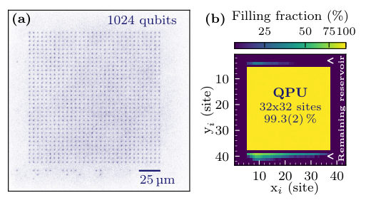
<figcaption class="paper-figure-caption"><b>Fig 1.</b> Figure 1. Large-scale array of atomic qubits forming a quan- tum processing unit (QPU) of 32×32 sites and a surrounding reservoir in an array of 43×43 homogenized optical tweez- ers created by modularized microoptical light field pattern- ing. Inerconnectivity is enhanced by parallelized atomic qubit transport. (a) Single-shot fluorescence image of a defect-free QPU of 1024 qubits. (b) Site-resolved visualization of the cumulative maximum filling fraction for twelve successive re- arrangement sequences. The QPU filling fraction is 99.3(2) %.</figcaption>
</figure>
<figure class="paper-figure-card">
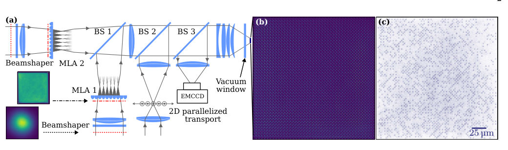
<figcaption class="paper-figure-caption"><b>Fig 2.</b> Figure 2. (a) Schematic of the optical setup. In two independent input ports, a diffractive beamshaper converts an input Gaussian beam (dashed line) into a top-hat profile (dash-dotted line). Each beam illuminates a microlens array (MLA 1,2) generating a homogenized two-dimensional (2D) array of laser foci. The two resulting static tweezer arrays are combined using a polarizing beam splitter (BS 1) and reimaged into the vacuum chamber. Dynamically steerable 2D parallelized optical tweezers for atom transport are superimposed using a non-polarizing beam combiner (BS 2) with 90 % transmission. (b) Intensity pattern of the combined MLA-generated trap arrays in an evenly-space interleaved...</figcaption>
</figure>
<figure class="paper-figure-card">
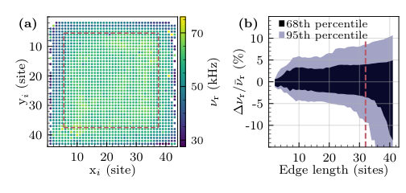
<figcaption class="paper-figure-caption"><b>Fig 3.</b> Figure 3. Radial vibrational frequency νr in the homoge- nized 43×43 site static tweezer array with the QPU (32×32 sites) indicated by dashed lines. (a) Site-resolved, color-coded representation of νr. Sites with insufficient statistics are left blank. (b) Spread of νr as deviation from the median for in- creasing edge length of a central quadratic array. The 68th (black) and 95th (blue) percentiles are shown.</figcaption>
</figure>
<figure class="paper-figure-card">
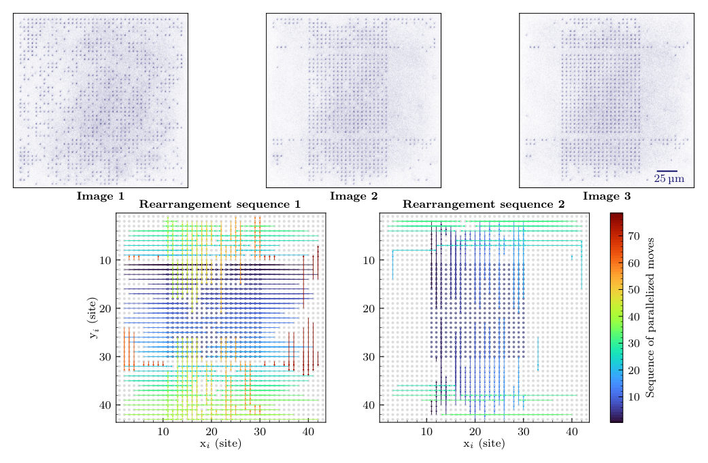
<figcaption class="paper-figure-caption"><b>Fig 4.</b> Figure 4. Parallelized rearrangement of atomic qubits into a defect-free 20×20 target pattern within two rearrangement sequences. Three subsequent fluorescence images (top) and the two interposed rearrangement sequences (bottom) containing consecutive multi-tweezer transport trajectories are shown. The color code indicates the temporal order of parallelized moves along rows and columns within each rearrangement sequence. Prior to the image 1, atom loading of both static arrays and supercharging of the processor array are performed.</figcaption>
</figure>
<figure class="paper-figure-card">
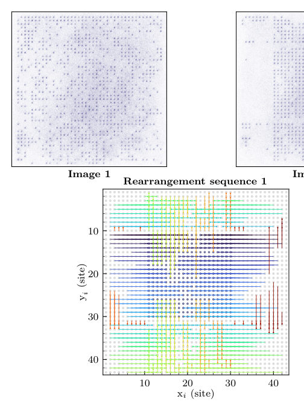
<figcaption class="paper-figure-caption"><b>Fig 5.</b> Figure 4 illustrates the assembly of a defect-free 20×20 qubit target pattern after supercharging of the processor array. The top row shows three consecutive fluorescence images of the atom array, while the bottom row depicts</figcaption>
</figure>
</div>

<p><strong>Summary.</strong> The research presents an advanced microoptical system capable of assembling massive, defect-free quantum registers using neutral atoms trapped in optical tweezers. By modularizing the trapping array generation and implementing parallelized atom transport, they achieve high uniformity and successfully demonstrate reliable assembly up to 1024 qubits. This significantly advances the hardware capabilities for large-scale quantum information processing.</p>
<p><strong>Why it may be interesting.</strong> This work directly addresses scalability bottlenecks in neutral-atom quantum computing by providing a robust, highly uniform, and fast hardware platform for creating large qubit arrays.</p>
<details>
<summary>Detailed structure</summary>
<p><strong>Main problem.</strong> The primary challenge is achieving the efficient, defect-free assembly of a large quantum register containing up to 1024 neutral-atom qubits.</p>
<p><strong>Main result.</strong> The authors demonstrated a novel microoptical architecture that enables the rapid and highly uniform assembly of $32 	imes 32$ arrays with near-unity filling fraction, pushing the platform toward the kiloqubit scale.</p>
<p><strong>Method.</strong> They combine microlens array generation for large-scale trapping with parallelized atom transport tweezers to achieve fast qubit relocation and pattern formation.</p>
<p><strong>Model / system.</strong> The physical system is a quantum register composed of neutral atoms trapped in optical tweezers generated by an advanced, modular microoptical setup. This architecture separates the static trap patterning from the dynamic transport mechanism.</p>
<p><strong>Key observables.</strong> Site-resolved vibrational frequency ($
u_r$), cumulative maximum filling fraction (approaching 99%), and survival probability during rearrangement sequences.</p>
<p><strong>Important parameters / regimes.</strong> System size up to $32 	imes 32$ sites, $>3500$ total potential sites, and a speedup factor of 9 compared to single-tweezer transport for large structures.</p>
<p><strong>Assumptions / limitations.</strong> The method relies on modularizing intensity equalization from tweezer patterning to overcome power limitations in single-device control. Homogeneity is assessed via the vibrational frequency $
u_r$.</p>
<p><strong>Figures summary.</strong> Figures illustrate high-fidelity assembly maps of $32 	imes 32$ QPU, schematics of the optical setup, and site-resolved uniformity measurements ($
u_r$) across large arrays.</p>
<p><strong>Paper structure.</strong> The paper details the novel microoptical architecture for scalable trapping, presents methods for characterizing trap uniformity using vibrational frequencies, and demonstrates the high-speed, parallelized rearrangement algorithm to assemble defect-free target patterns up to 1024 qubits.</p>
</details>
<details>
<summary>Abstract</summary>
<p>Low-entropy arrays of atomic quantum systems in optical tweezers offer unique prospects for fundamental research on few- and many-body systems as well as for extended applications in quantum technology. The significance of this approach relies on the achievable system size, its uniformity, and the rate of qubit allocation. We propel the neutral-atom quantum-technology platform by the rapid assembly of a regular two-dimensional quantum register of up to 1024 atomic qubits, enabled by a novel implementation of intensity-homogenized tweezer arrays and parallelized atom transport. Our highly efficient microoptical architecture modularizes intensity equalization and tweezer patterning in separate functional units, eliminating restrictions that arise for high-power, high-resolution, and large-scale light-field control within a single device. Arrays of precise grid structure, trap depth, and vibrational frequency with more than 3500 sites are demonstrated. Individual sites are interconnected by up to 50 parallelized transport tweezers with intensity and position control in real-time for swift qubit relocation. Multi-tweezer transport enables the operation of target patterns of up to 32 x 32 sites with sustained near-unity filling fraction. These results boost neutral-atom quantum information science above the kiloqubit level.</p>
</details>
<p><sub><a href="#top">↑ back to top</a></sub></p>

<p><a id="paper-2608.11523"></a></p>
<h3 id="dynamics-of-the-spontaneous-emission-factor-in-multiple-quantum-well-nanowire-lasers"><a href="http://arxiv.org/abs/2608.11523v1">Dynamics of the spontaneous emission factor in multiple quantum well nanowire lasers</a></h3>
<p><strong>Authors:</strong> Parya Reyhanian, Christopher G Poulton, Arti Agrawal, Charlene J. Lobo<br>
<strong>Type:</strong> theory · <strong>Category:</strong> other · <strong>PDF:</strong> <a href="https://arxiv.org/pdf/2608.11523v1">https://arxiv.org/pdf/2608.11523v1</a><br>
<strong>Analysis basis:</strong> full PDF text, analyzed in chunks
<strong>Topic relevance:</strong> 🔥 <code>methods for driven-dissipative</code> <strong>4/5</strong> · <code>Keldysh / 2PI / non-Gaussian methods</code> <strong>3/5</strong> · <code>correlated / nonlocal dissipation</code> <strong>3/5</strong> · <code>driven-dissipative phase transition</code> <strong>3/5</strong> · <code>Dicke superradiance</code> <strong>2/5</strong> · <code>interference shaping light</code> <strong>2/5</strong> · <code>quantum measurements</code> <strong>2/5</strong> · <code>superradiant laser</code> <strong>2/5</strong> · <code>Tavis-Cummings &amp; cavity-many-emitter</code> <strong>1/5</strong> · <code>non-equilibrium universality</code> <strong>1/5</strong></p>
<div class="figure-strip-hint">↔ Scroll figures horizontally</div>
<div class="paper-figures-scroll">
<figure class="paper-figure-card">
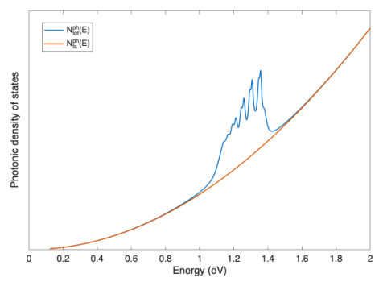
<figcaption class="paper-figure-caption"><b>Fig 1.</b> Fig. 2. Total photonic density of states Nph tot(E) of the MQW nanowire laser depicted in Fig. 1. The free space density of states Nph fs (E) is also shown.</figcaption>
</figure>
<figure class="paper-figure-card">
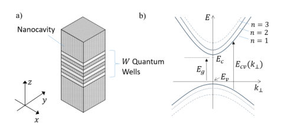
<figcaption class="paper-figure-caption"><b>Fig 2.</b> Fig. 1. (a) Schematic of multiple quantum well semiconductor nanowire laser. We assume that the quantum wells are oriented perpendicular to the z axis and have equal widths Lz; b) Energy level diagram showing the first three energy levels in the quantum wells as a function of the perpendicular wavenumber k⊥. The edge of the valence band in the bulk active semiconductor is set at Ev = 0 throughout this paper. The band edges shift due to quantization introduced by the quantum well.</figcaption>
</figure>
<figure class="paper-figure-card">
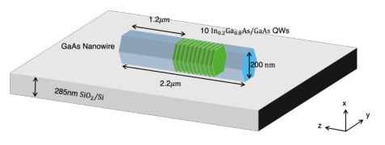
<figcaption class="paper-figure-caption"><b>Fig 3.</b> Fig. 4. Schematic diagram of the modelled In0.2Ga0.80As/GaAs quantum-well nanowire laser. The nanowire cavity is surrounded by air and contains W=10 quantum wells, each with thickness 19 nm.</figcaption>
</figure>
<figure class="paper-figure-card">
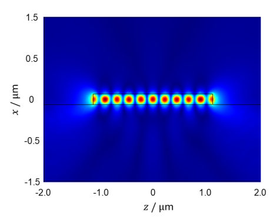
<figcaption class="paper-figure-caption"><b>Fig 4.</b> Fig. 5. Cross-section from the 3D cavity simulation of the In0.2Ga0.80As/GaAs MQW nanowire laser showing the electric field intensity of the HE11b lasing mode along the longitudinal (x) axis.</figcaption>
</figure>
<figure class="paper-figure-card">
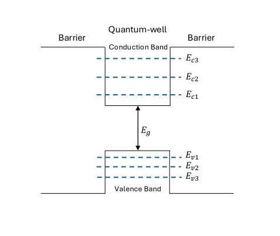
<figcaption class="paper-figure-caption"><b>Fig 5.</b> Fig. 3. Three discrete electron (Ec1, Ec2, Ec3) and hole (Ev1, Ev2, Ev3) energy levels within the conduction and valence bands of each QW.</figcaption>
</figure>
</div>

<p><strong>Summary.</strong> This paper develops a theoretical framework to calculate the spontaneous emission factor ($eta$) dynamically for MQW nanowire lasers, treating it as a variable rather than a constant. By coupling quantum electrodynamics with semiconductor physics, the authors show that $eta$ strongly depends on carrier density, accurately predicting laser thresholds and spectral behavior near operation.</p>
<p><strong>Why it may be interesting.</strong> This work is highly relevant as it models open quantum systems dynamics (spontaneous emission into a structured cavity) using rate equations derived from fundamental quantum electrodynamics principles, providing insights into light-matter interaction in nanoscale devices.</p>
<details>
<summary>Detailed structure</summary>
<p><strong>Main problem.</strong> The study investigates the dynamic nature of the spontaneous emission factor (the eta or beta factor) in multiple quantum well (MQW) nanowire lasers, moving beyond previous constant approximations.</p>
<p><strong>Main result.</strong> The spontaneous emission factor is shown to be highly dependent on charge carrier density and device parameters, peaking near the lasing threshold before decreasing above it.</p>
<p><strong>Method.</strong> The authors derive general expressions for the beta factor and gain using quantum electrodynamics principles applied to semiconductor quantum wells, combining Finite Element Modeling (FEM) with rate equation analysis.</p>
<p><strong>Model / system.</strong> The system modeled is an MQW nanowire laser structure ($    ext{In}<em 0.8>{0.2}   ext{Ga}</em>$), where the photonic density of states (PDOS) is calculated by combining free-space and discrete cavity Lorentzian modes.}   ext{As}/    ext{GaAs</p>
<p><strong>Key observables.</strong> Spontaneous emission factor ($eta$), laser gain, Lasing threshold power, and the spontaneous emission spectrum $   ext{r}_{    ext{spon}}(E)$.</p>
<p><strong>Important parameters / regimes.</strong> Charge carrier density ($N_c$), quantum well thickness ($L_z$), Indium composition (In content), and cavity mode frequency.</p>
<p><strong>Assumptions / limitations.</strong> The model assumes that the cavity modes are sufficiently well-confined to be treated as discrete Lorentzian terms, and it utilizes Einstein coefficients for rate calculations.</p>
<p><strong>Figures summary.</strong> Figures illustrate the schematic structure of the laser, the total photonic density of states (PDOS), and crucially, plots showing $eta$'s dependence on carrier density ($N_c$) relative to the lasing threshold.</p>
<p><strong>Paper structure.</strong> The paper progresses from defining the physical problem and deriving general theoretical expressions for $eta$ using QED principles. It then applies this model to specific MQW nanowire structures, analyzing how varying carrier densities affects $eta$, gain, and ultimately predicting the laser's operational characteristics like threshold power.</p>
</details>
<details>
<summary>Abstract</summary>
<p>The spontaneous emission factor - often known as the \b{eta} factor - is an important quantity in the description of quantum well lasers, influencing both the threshold power as well as the general shape of the light in-light out (L-L) curve. Past work on modelling multiple quantum well (MQW) nanowire laser devices has typically assumed that the \b{eta} factor is a constant parameter that can either be estimated or fit in a post-hoc manner. However, the \b{eta} factor can be derived from the transitions between valence and conduction bands in semiconductor quantum wells, together with knowledge of the cavity modes. Here we investigate the dynamic nature of the \b{eta} factor for MQW nanowire lasers, and show how it can be computed. We also examine the dependence of the spontaneous emission rate and spontaneous emission factor \b{eta} on the charge carrier density, quantum well thickness, and composition, and discuss the impact on laser threshold and operation.</p>
</details>
<p><sub><a href="#top">↑ back to top</a></sub></p>

<p><a id="paper-2608.12312"></a></p>
<h3 id="interface-phases-and-dynamics-in-two-dimensional-quantum-magnets-a-holographic-approach-from-universality-to-quantum-simulation"><a href="http://arxiv.org/abs/2608.12312v1">Interface phases and dynamics in two-dimensional quantum magnets: A "holographic" approach from universality to quantum simulation</a></h3>
<p><strong>Authors:</strong> Abhishodh Prakash, Jaydev Singh Rao, Siddharth A. Parameswaran, Alessio Lerose<br>
<strong>Type:</strong> both · <strong>Category:</strong> statistical mechanics · <strong>PDF:</strong> <a href="https://arxiv.org/pdf/2608.12312v1">https://arxiv.org/pdf/2608.12312v1</a><br>
<strong>Analysis basis:</strong> full PDF text, analyzed in chunks
<strong>Topic relevance:</strong> 🔥 <code>analog quantum simulation</code> <strong>4/5</strong> · <code>Full counting statistics</code> <strong>3/5</strong> · <code>methods for driven-dissipative</code> <strong>3/5</strong> · <code>non-equilibrium universality</code> <strong>3/5</strong> · <code>Frenkel-Kontorova</code> <strong>2/5</strong> · <code>Keldysh / 2PI / non-Gaussian methods</code> <strong>2/5</strong> · <code>driven-dissipative phase transition</code> <strong>2/5</strong> · <code>correlated / nonlocal dissipation</code> <strong>1/5</strong> · <code>quantum measurements</code> <strong>1/5</strong> · <code>scars &amp; prethermalization</code> <strong>1/5</strong></p>
<div class="figure-strip-hint">↔ Scroll figures horizontally</div>
<div class="paper-figures-scroll">
<figure class="paper-figure-card">
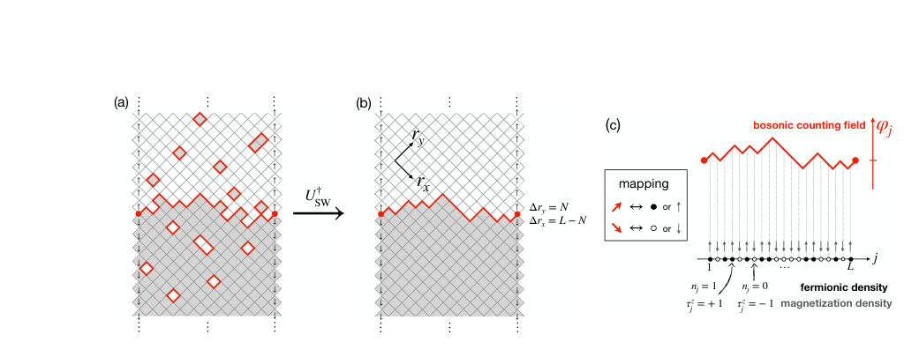
<figcaption class="paper-figure-caption"><b>Fig 1.</b> Figure 1. “Holographic” description of interfaces in 2D quantum magnets. For illustration, we consider an Ising square lattice tilted by 45◦. Spins on the vertical sides are frozen as shown, pinning the endpoints of a domain wall. Panel (a): Typical computational-basis snapshot of the ground-state wave function of a quantum Ising- type ferromagnet with the considered boundary conditions, with white/gray plaquettes depicting up/down spins. Panel (b): Undoing the Schrieffer-Wolff transformation USW, the bulk regions look perfectly magnetized, and wave function snapshots consist of minimal-length domain walls, i.e., ground states of the classical Ising ferromagnet. Panel (c): The classical...</figcaption>
</figure>
<figure class="paper-figure-card">
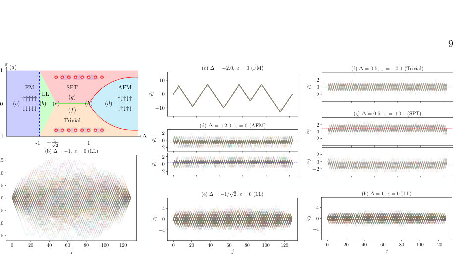
<figcaption class="paper-figure-caption"><b>Fig 2.</b> Figure 2. Interface quantum phase structure (I). Panel (a): Schematic phase diagram of the effective 1D Hamiltonian (11). Panels (b-h): Interface fluctuation statistics computed from the 1D ground-state wave function in various phases: (b,e,h) Luttinger-liquid (LL) phase for three values of the anisotropy parameter ∆= 2J′/g; (c) Ferromagnetic and (d) antiferromagnetic (Néel) phases; (f) trivial and (g) Haldane SPT gapped phases. Degenerate ground states are shown for the Néel and Haldane SPT phases. Horizontal dashed lines highlight field-theoretical bosonization predictions. Here L = 128 and the plots are made by overlapping 50 (200) wave-function snapshots for gapped (gapless) states.</figcaption>
</figure>
<figure class="paper-figure-card">
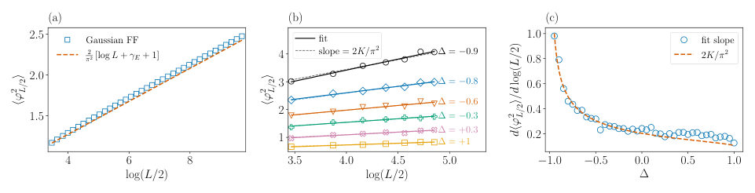
<figcaption class="paper-figure-caption"><b>Fig 3.</b> Figure 3. Roughness scaling law (21). Panels (a,b): Mid-point variance of the interface height ⟨φ2 L/2⟩vs interface length, numerically computed from the effective 1D XXZ spin chain ground state, for (a) the free-fermion point J′ = 0 and (b) general values of the effective anisotropy ∆= 2J′/g. Panel (c): illustration of the scaling law in Eq. (21). For the free-fermion point, we overlay the numerically exact result of ⟨φ2 L/2⟩from Gaussian techniques with the known large-size asymptotics ⟨φ2 L/2⟩= 2 π2 [log(L/2) + log 2 + γE + 1 + o(1)], where γE is the Euler-Mascheroni constant [63]. For the general case (b,c), ⟨φ2 L/2⟩is computed by averaging over 105 ground state wave-function snapshots...</figcaption>
</figure>
<figure class="paper-figure-card">
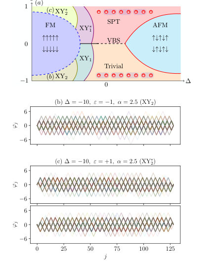
<figcaption class="paper-figure-caption"><b>Fig 4.</b> Figure 4. Interface quantum phase structure (II). Panel (a): Schematic phase diagram of the effective 1D Hamiltonian (25) for g′/g = α ∼2.5. Panels (b,c): Interface fluctuation statistics computed from the 1D ground-state wave function in the rough trival (XY2) (b) and non-trivial (XY∗ 2) (c) symmetry-enriched critical phases. XY∗ 2 has degenerate ground states with distinct edge modes that are shown. Here L = 128 and the plots are made by overlapping 200 wave-function snapshots.</figcaption>
</figure>
<figure class="paper-figure-card">
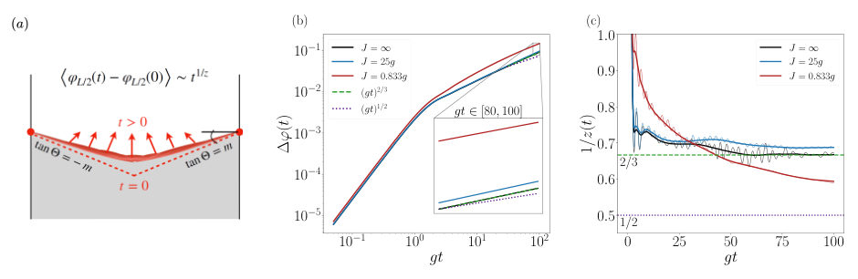
<figcaption class="paper-figure-caption"><b>Fig 5.</b> Figure 5. Curvature-driven quantum dynamics. Panel (a): Illustration of curvature-driven evolution starting from a corner-like configuration at t = 0. Panel (b): Evolution of the interface height variation ∆φ(t) = φL/2(t) − φL/2(0) from initial slopes tan Θ = ±m = ±0.01, computed from the effective 1D Hamiltonian dynamics (40) for J = ∞(black), J = 25g (blue) and J = 0.833g (red), corresponding to spin-transport in an unperturbed, weakly perturbed, and strongly perturbed SU(2)-symmetric Heisenberg chain of size L = 200, respectively. Panel (c): Running dynamical exponent 1/z(t) = d log ∆φ/d log t for the same three simulations, shown as raw point-wise log- derivative (thin) and smoothed...</figcaption>
</figure>
</div>

<p><strong>Summary.</strong> This work develops a 'holographic' framework to study interfaces in 2D quantum magnets by mapping the complex problem onto effective 1D Hamiltonians. It classifies rich quantum phase structures and predicts distinct scaling laws for non-equilibrium dynamics. Crucially, it demonstrates how this theory can guide experiments to measure advanced diagnostics like full counting statistics using neutral atom arrays.</p>
<p><strong>Why it may be interesting.</strong> It provides a powerful theoretical bridge between high-dimensional quantum magnets and exactly solvable 1D quantum systems, directly connecting abstract field theory concepts to measurable quantities in modern quantum simulation platforms (neutral atoms).</p>
<details>
<summary>Detailed structure</summary>
<p><strong>Main problem.</strong> The paper aims to classify quantum phases, phase transitions, and non-equilibrium dynamics of interfaces separating ordered bulk domains in 2D quantum magnets.</p>
<p><strong>Main result.</strong> A framework is established that predicts distinct spatiotemporal scaling laws for interface dynamics and enables the measurement of charge full counting statistics in simulated 1D systems.</p>
<p><strong>Method.</strong> The approach uses a 'holographic' mapping, reinterpreted as an exact bosonization, to reduce the problem to effective 1D Hamiltonians governing geometric fluctuations. These are analyzed using techniques derived from field theory and numerical simulation.</p>
<p><strong>Model / system.</strong> The system is based on 2D quantum magnets (e.g., spin-1/2 Ising model) whose interface dynamics are mapped onto an effective 1D fermionic or bosonic chain Hamiltonian, which can be related to known models like the XXZ chain.</p>
<p><strong>Key observables.</strong> Interface phase structure (stiff vs. rough), spatiotemporal scaling laws for curvature-driven dynamics, and charge full counting statistics.</p>
<p><strong>Important parameters / regimes.</strong> Perturbation strength ($\lambda$), filling factor ($
ho$), and magnetization density ($m$).</p>
<p><strong>Assumptions / limitations.</strong> The low-energy physics is accurately captured by truncating the Schrieffer-Wolff transformation series for small perturbations, treating this as an exact description.</p>
<p><strong>Figures summary.</strong> Figure 1 illustrates the holographic mapping: showing a computational basis snapshot of a ground state, minimal-length domain walls, and the explicit mapping to a 1D Fock space relating fermionic filling to magnetization density.</p>
<p><strong>Paper structure.</strong> The paper introduces the framework by defining the problem in 2D quantum magnets, derives the effective 1D Hamiltonian via dimensional reduction (holography/bosonization), analyzes the resulting phase structure and dynamics, and concludes with a demonstration of measuring advanced observables like full counting statistics using neutral-atom array simulations.</p>
</details>
<details>
<summary>Abstract</summary>
<p>We introduce a framework to classify quantum phases, phase transitions, and non-equilibrium dynamics of interfaces separating ordered bulk domains in 2D quantum magnets - equivalently, confining strings in dual lattice gauge theories - based on effective 1D Hamiltonians governing geometric fluctuations. Building on a "holographic" approach from [Phys. Rev. Lett. 129, 120601 (2022)], here reinterpreted as an exact bosonization, we uncover a rich quantum phase structure, with a variety of stiff and rough interface phases described by gapped and gapless 1D ground states, respectively, all distinguishable through the statistics of 2D wave-function snapshots. Our framework allows us to predict distinct spatiotemporal scaling laws for non-equilibrium curvature-driven interface dynamics across parameter space, which can be readily probed in existing experiments. We finally show that our approach enables the unprecedented experimental opportunity of directly measuring charge full counting statistics and symmetry-resolved properties of an encoded 1D system, as we explicitly demonstrate by numerically simulating a neutral-atom array experiment.</p>
</details>
<p><sub><a href="#top">↑ back to top</a></sub></p>

<p><a id="paper-2608.11316"></a></p>
<h3 id="particle-production-equilibration-and-quantum-recurrences-from-classical-fields"><a href="http://arxiv.org/abs/2608.11316v1">Particle Production, Equilibration, and Quantum Recurrences from Classical Fields</a></h3>
<p><strong>Authors:</strong> Iván Cuntín, Wenyang Qian, Bin Wu<br>
<strong>Type:</strong> theory · <strong>Category:</strong> numerical methods · <strong>PDF:</strong> <a href="https://arxiv.org/pdf/2608.11316v1">https://arxiv.org/pdf/2608.11316v1</a><br>
<strong>Analysis basis:</strong> full PDF text, analyzed in chunks
<strong>Topic relevance:</strong> 🔥 <code>methods for driven-dissipative</code> <strong>4/5</strong> · 🔥 <code>scars &amp; prethermalization</code> <strong>4/5</strong> · <code>Keldysh / 2PI / non-Gaussian methods</code> <strong>3/5</strong> · <code>non-equilibrium universality</code> <strong>3/5</strong> · <code>analog quantum simulation</code> <strong>2/5</strong> · <code>driven-dissipative phase transition</code> <strong>2/5</strong> · <code>correlated / nonlocal dissipation</code> <strong>1/5</strong> · <code>quantum measurements</code> <strong>1/5</strong></p>
<div class="figure-strip-hint">↔ Scroll figures horizontally</div>
<div class="paper-figures-scroll">
<figure class="paper-figure-card">
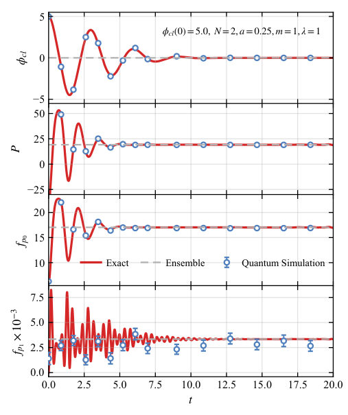
<figcaption class="paper-figure-caption"><b>Fig 1.</b> FIG. 1. Particle production and equilibration from clas- sical fields. For ϕcl(0) = 5, πcl(0) = 0, a = 0.25, m = 1 and λ = 1, the field expectation value ϕcl, pressure P, and occupation-number distribution fp obtained by direct expo- nentiation (Exact) all relax to the values predicted by the diagonal ensemble ρeq [Eq. (9), Ensemble]. Data points with error bars (Quantum Simulation) are obtained from 220 mea- surements of the Qiskit circuit with nQ = 6 qubits per site and second-order Trotter step δt = 0.01.</figcaption>
</figure>
<figure class="paper-figure-card">
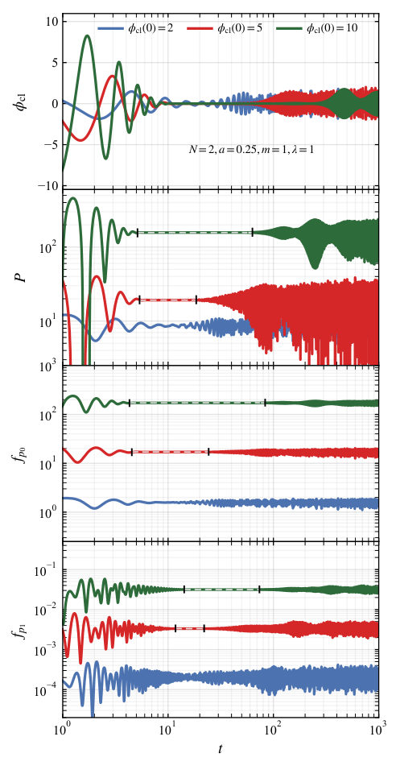
<figcaption class="paper-figure-caption"><b>Fig 2.</b> FIG. 2. Equilibration and quantum recurrences for ϕcl(0) = 2, 5, and 10 with πcl(0) = 0 on a two-site one-dimensional lattice. The parameters are a = 0.25, m = 1, and λ = 1. Direct exponentiation of Eq. (2), involving matrices up to 216 × 216, provides an exact benchmark for the gate-based quantum algorithm. Gray dashed lines show the equilibration intervals of P and fp, with short vertical lines marking their endpoints for ϕcl(0) = 5 and 10.</figcaption>
</figure>
<figure class="paper-figure-card">
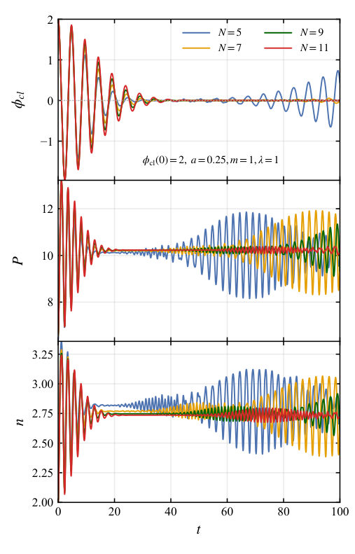
<figcaption class="paper-figure-caption"><b>Fig 3.</b> FIG. 3. Equilibration with increasing system size. Shown are the field expectation value ϕcl(t) (top), pressure P (middle), and particle number density n (bottom) for one-dimensional lattices with N = 5, 7, 9, and 11 sites, starting from a coherent state with ϕcl(0) = 2 and πcl(0) = 0. The parameters are a = 0.25, m = 1, and λ = 1. The observables exhibit longer-lived equilibration stages, followed by a further delayed renewal of oscillations, as the system size increases. Tensor-network simulations use a maximal bond dimension χmax = 25 and time step δt = 0.01.</figcaption>
</figure>
<figure class="paper-figure-card">
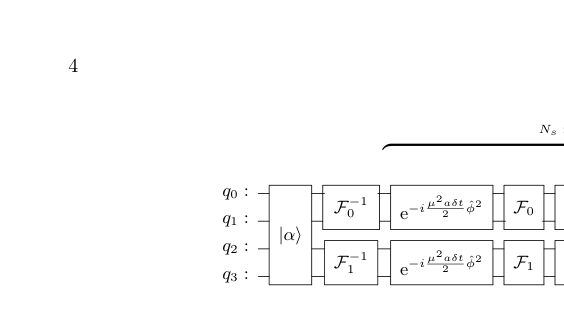
<figcaption class="paper-figure-caption"><b>Fig 4.</b> FIG. 4. Full real-time evolution e−iHt with N = 2 and nQ = 2.</figcaption>
</figure>
<figure class="paper-figure-card">
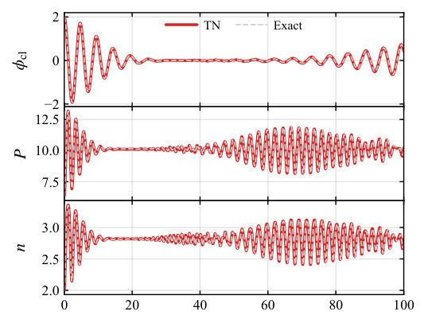
<figcaption class="paper-figure-caption"><b>Fig 5.</b> FIG. 7. Comparison between the tensor-network (TN) and direct-exponentiation (exact) results for an initial coherent state with ϕcl(0) = 2 and πcl(0) = 0 on a one-dimensional lattice with N = 5, a = 0.25, m = 1, and λ = 1. The agreement validates the TN approach for the observables considered in the main text.</figcaption>
</figure>
</div>

<p><strong>Summary.</strong> This work simulates particle production and equilibration in a lattice $\lambda\phi^4$ theory, modeling conditions found in heavy-ion collisions. By employing advanced numerical techniques like tensor networks and quantum circuit simulations, the authors show that observables relax to equilibrium values before exhibiting quantum Poincaré recurrences. This establishes a first-principles computational route for studying non-equilibrium dynamics.</p>
<p><strong>Why it may be interesting.</strong> While focused on QFT, the techniques—especially using TNs to simulate non-equilibrium dynamics and track thermalization—are highly relevant to simulating complex quantum many-body systems in AMO physics.</p>
<details>
<summary>Detailed structure</summary>
<p><strong>Main problem.</strong> The research investigates how particle production and thermalization occur from highly excited, non-equilibrium quantum states relevant to heavy-ion collisions or the early universe.</p>
<p><strong>Main result.</strong> The study demonstrates that observables equilibrate sequentially in momentum space, persisting beyond initial relaxation times before exhibiting characteristic quantum Poincaré recurrences.</p>
<p><strong>Method.</strong> A combination of quantum circuit simulation (for small lattices) and Tensor Network methods (for larger systems) is used to simulate real-time evolution governed by the $\lambda\phi^4$ Hamiltonian.</p>
<p><strong>Model / system.</strong> The model is lattice $\lambda\phi^4$ theory, simulating a scalar field ($\hat{\phi}$) on a discrete spatial lattice. The dynamics are driven by the full Hamiltonian $H = H_0 + H_{	ext{int}}$, initialized in coherent states $|\psi(0)
angle$.</p>
<p><strong>Key observables.</strong> Field expectation value ($\langle \hat{\phi} 
angle$), pressure ($P$), occupation-number distribution ($f_p$), and particle number density ($n$).</p>
<p><strong>Important parameters / regimes.</strong> Lattice spacing ($a$), mass ($m$), coupling constant ($\lambda$), and initial field amplitudes ($\phi_{cl}(0)$). Time scales are measured in units of $m^{-1}$.</p>
<p><strong>Assumptions / limitations.</strong> The use of truncated Harmonic Oscillator bases (in TN methods) and the reliance on quantum circuit decompositions for time evolution, which are computationally intensive.</p>
<p><strong>Figures summary.</strong> Figures illustrate observable relaxation ($\phi_{cl}, P, f_p$) over time, comparing exact vs. simulated results; they also show how equilibration times increase with system size ($N$).</p>
<p><strong>Paper structure.</strong> The paper develops the framework by defining the Hamiltonian and initial coherent states, then details the simulation methods (quantum circuits/TN evolution), presents diagnostics for equilibrium ($
ho_{eq}$), and finally analyzes the time evolution dynamics across different lattice sizes.</p>
</details>
<details>
<summary>Abstract</summary>
<p>We investigate particle production from classical fields, a phenomenon central to the pre-equilibrium dynamics of relativistic heavy-ion collisions and the reheating epoch of the early Universe. Using lattice $λφ^4$ theory as a proof of principle, we show that this problem is naturally amenable to quantum computation, providing a first-principles framework for nonequilibrium quantum-field dynamics beyond existing approximations. We perform simulations on small spatial lattices, exhausting our available classical computational resources while maintaining a direct mapping to future quantum-computing implementations. We find that particle production is accompanied by equilibration of observables, including the field expectation value, occupation-number distribution, and pressure. The observed equilibration persists for timescales several times longer than the initial equilibration time before the observables resume oscillatory behavior associated with quantum Poincaré recurrences. Our results establish a route toward first-principles studies of equilibration in nonequilibrium quantum field theory and provide insight into the search for the smallest possible locally equilibrated quark-gluon systems at hadron colliders.</p>
</details>
<p><sub><a href="#top">↑ back to top</a></sub></p>

<p><a id="paper-2608.11783"></a></p>
<h3 id="antibunching-enhancement-via-non-markovianity-in-a-hybrid-optical-microwave-cross-cavity"><a href="http://arxiv.org/abs/2608.11783v1">Antibunching Enhancement via Non-Markovianity in a Hybrid Optical-Microwave Cross-Cavity</a></h3>
<p><strong>Authors:</strong> Shiying Gu, Jun-Qi Li, Liping Guo<br>
<strong>Type:</strong> theory · <strong>Category:</strong> other · <strong>PDF:</strong> <a href="https://arxiv.org/pdf/2608.11783v1">https://arxiv.org/pdf/2608.11783v1</a><br>
<strong>Analysis basis:</strong> full PDF text, analyzed in chunks
<strong>Topic relevance:</strong> 🔥 <code>methods for driven-dissipative</code> <strong>4/5</strong> · <code>Keldysh / 2PI / non-Gaussian methods</code> <strong>3/5</strong> · <code>correlated / nonlocal dissipation</code> <strong>3/5</strong> · <code>Tavis-Cummings &amp; cavity-many-emitter</code> <strong>2/5</strong> · <code>driven-dissipative phase transition</code> <strong>2/5</strong> · <code>analog quantum simulation</code> <strong>1/5</strong> · <code>interference shaping light</code> <strong>1/5</strong> · <code>non-equilibrium universality</code> <strong>1/5</strong> · <code>quantum measurements</code> <strong>1/5</strong> · <code>superradiant laser</code> <strong>1/5</strong></p>
<div class="figure-strip-hint">↔ Scroll figures horizontally</div>
<div class="paper-figures-scroll">
<figure class="paper-figure-card">
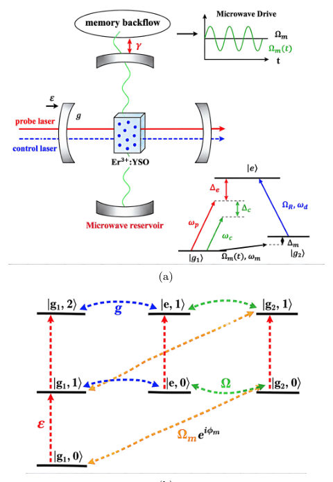
<figcaption class="paper-figure-caption"><b>Fig 1.</b> FIG. 1. Schematic of the crossed optical-microwave cavity and the level configuration. (a) An Er3+:Y2SiO5 crystal is positioned at the intersection of an optical Fabry-P´erot cavity and a microwave resonator. The lower right inset illustrates the ∆-type three-level atomic configuration, where |g1⟩and |g2⟩are the hyperfine ground states, and |e⟩is the excited state. The top right inset is that the constant bare amplitude Ωm evolves into a time-dependent effective field Ωm(t) due to the non-Markovian environmental feedback. (b) Energy- level and transition pathways for the destructive quantum interference .</figcaption>
</figure>
<figure class="paper-figure-card">
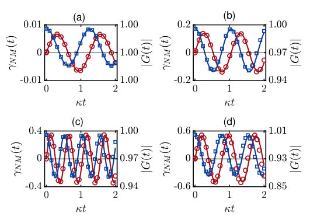
<figcaption class="paper-figure-caption"><b>Fig 2.</b> FIG. 2. Comparison of the analytical and numerical solu- tions for the non-Markovian dissipation rate γNM(t) (left axis, red) and the decoherence amplitude |G(t)| (right axis, blue). Solid lines represent the first-order perturbative analytical so- lutions, while open circles and squares denote the numerical results obtained via the ODE method. (a) γ = 0.01, ∆mc = 5; (b) γ = 0.05, ∆mc = 6; (c) γ = 0.1, ∆mc = 12; and (d) γ = 0.1, ∆mc = 8.</figcaption>
</figure>
<figure class="paper-figure-card">
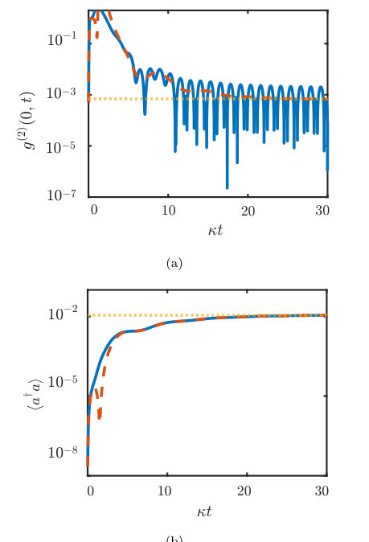
<figcaption class="paper-figure-caption"><b>Fig 3.</b> FIG. 3. Comparison results of the second-order coherence log10[g(2)(0, t)] (a) and the photon numbers ⟨a†a⟩(b) given by the Markovian (red dashed line) and the non-Markovian evolution (blue solid line) respectively. The yellow dotted line is the Markovian steady-state limit. The system parameters are set as g = 1.0κ, ΩR = 0.5κ, ϵ = γ = λ = 0.01κ, ∆c = ∆e = 0, ∆m = 0.051κ, Ωm = 0.035κ, ∆mc = 5.0κ and ϕm = 0.</figcaption>
</figure>
<figure class="paper-figure-card">
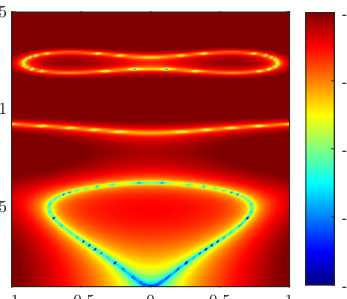
<figcaption class="paper-figure-caption"><b>Fig 4.</b> FIG. 4. Transient photon blockade patterns and detuning dependence of the non-Markovian UPB at t = 19.5/κ. The logarithmic second-order coherence log10[g(2)(0, t)] is shown as a function of (a) ∆m/κ and γ/κ. Here ∆c/κ = 0. (b) ∆c/κ and γ/κ, here ∆m/κ = 0.051. The other parameters chosen are the same as Fig. 3.</figcaption>
</figure>
<figure class="paper-figure-card">
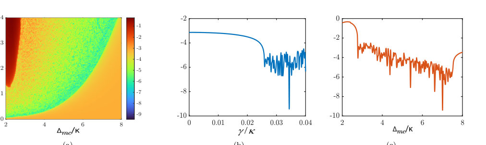
<figcaption class="paper-figure-caption"><b>Fig 5.</b> FIG. 5. Contour plot of transient minimum mint log10[g(2)(0, t)] as a function of ∆mc/κ and γ/κ (a), and panels (b) and (c) display the 1D cross-sections along the ∆mc = 7.0κ and γ = 0.034κ axes, respectively. Every data point in panel (a) is independently evaluated by continuously scanning 0 ≤κt ≤40 to capture the optimal interference time topt. The other parameters chosen are the same as those in Fig. 3.</figcaption>
</figure>
</div>

<p><strong>Summary.</strong> The paper investigates enhancing antibunching in a hybrid optical-microwave cavity system by exploiting non-Markovian environmental effects. Using the time-convolutionless framework, the authors show that structured dissipation allows for information backflow, which boosts photon blockade beyond what is possible in standard Markovian models. This demonstrates a pathway to using environmental memory as a controllable resource for high-purity single-photon generation.</p>
<p><strong>Why it may be interesting.</strong> This work is highly relevant as it tackles open quantum systems dynamics, specifically showing how structured environments (non-Markovianity) can actively enhance quantum light sources like single-photon emitters, a core topic in cavity QED and quantum optics.</p>
<details>
<summary>Detailed structure</summary>
<p><strong>Main problem.</strong> The primary goal is enhancing single-photon antibunching by utilizing non-Markovian environmental effects, thereby transforming decoherence from a limitation into a controllable quantum resource.</p>
<p><strong>Main result.</strong> Non-Markovian dynamics allow for the backflow of environmental information, significantly suppressing the second-order correlation function ($g^{(2)} \sim 10^{-7}$) and broadening the antibunching profile.</p>
<p><strong>Method.</strong> The study employs the time-convolutionless non-Markovian framework to derive time-dependent decay rates and renormalized drives for the open quantum system dynamics.</p>
<p><strong>Model / system.</strong> The physical platform is a hybrid optical-microwave cross-cavity system involving an Er3+:Y2SiO5 crystal. The theoretical treatment involves deriving master equations incorporating non-Markovian memory kernels derived from spectral density functions.</p>
<p><strong>Key observables.</strong> Second-order correlation function ($g^{(2)}$), non-Markovian decay rate ($\gamma_{	ext{NM}}(t)$), and the renormalized microwave drive ($\Omega_m(t)$).</p>
<p><strong>Important parameters / regimes.</strong> Weak coupling regime, optical detuning, temperature (T=20 K mentioned in notes), and spectral density parameters.</p>
<p><strong>Assumptions / limitations.</strong> The analysis relies on the time-convolutionless master equation approach and assumes the microwave environment is in thermal equilibrium.</p>
<p><strong>Figures summary.</strong> Figures illustrate the crossed cavity setup, show the evolution of the renormalized drive $\Omega_m(t)$, compare decoherence functions $G(t)$ with revival features, and present blockade maps for $g^{(2)}(0, t)$.</p>
<p><strong>Paper structure.</strong> The paper builds from establishing the physical model (hybrid cross-cavity) to deriving the non-Markovian dynamics using advanced techniques like the time-convolutionless framework. It then applies this formalism to calculate key observables like $g^{(2)}$ and $\gamma_{	ext{NM}}(t)$, culminating in demonstrating the resource potential of environmental memory.</p>
</details>
<details>
<summary>Abstract</summary>
<p>Unconventional photon blockade (UPB) provides an attractive route for generating antibunched light through quantum interference without requiring strong nonlinear coupling. In conventional Markovian systems, irreversible dissipation progressively destroys the phase coherence, even limiting the achievable single-photon purity. Here we propose a scheme for imposing non-Markovian effects on a microwave cavity where a Er$^{3+}$:Y$_2$SiO$_5$ crystal loaded into a hybrid optical-microwave system. Based on the time-convolutionless non-Markovian framework, we derive the time-dependent non-Markovian decay rate and the renormalized microwave drive in the weak-coupling regime. We show that the second-order correlation function is significantly suppressed, even to the order of $10^{-7}$, since the backflow of environmental information enhances photon blocking. In addition, this structured reservoir engineering not only provides an additional degree of freedom, but also further optimizes the blockade via optical detuning. Importantly, the delayed second-order correlation exhibits a broadened antibunching profile, thereby relaxing the timing requirements for single-photon synchronization. Our results demonstrate that environmental non-Markovianity can be transformed from a source of decoherence into a controllable quantum resource, opening new opportunities for high-purity single-photon generation.</p>
</details>
<p><sub><a href="#top">↑ back to top</a></sub></p>

<p><a id="paper-2608.11642"></a></p>
<h3 id="fluctuation-spectra-and-response-function-of-coupled-atomic-and-molecular-becs"><a href="http://arxiv.org/abs/2608.11642v1">Fluctuation Spectra and Response Function of Coupled Atomic and Molecular BECs</a></h3>
<p><strong>Authors:</strong> Avinaba Mukherjee, Raka Dasgupta<br>
<strong>Type:</strong> theory · <strong>Category:</strong> quantum gases · <strong>PDF:</strong> <a href="https://arxiv.org/pdf/2608.11642v1">https://arxiv.org/pdf/2608.11642v1</a><br>
<strong>Analysis basis:</strong> full PDF text, analyzed in chunks
<strong>Topic relevance:</strong> 🔥 <code>analog quantum simulation</code> <strong>4/5</strong> · <code>Keldysh / 2PI / non-Gaussian methods</code> <strong>3/5</strong> · <code>driven-dissipative phase transition</code> <strong>3/5</strong> · <code>methods for driven-dissipative</code> <strong>3/5</strong> · <code>non-equilibrium universality</code> <strong>2/5</strong> · <code>correlated / nonlocal dissipation</code> <strong>1/5</strong> · <code>quantum measurements</code> <strong>1/5</strong> · <code>scars &amp; prethermalization</code> <strong>1/5</strong></p>
<div class="figure-strip-hint">↔ Scroll figures horizontally</div>
<div class="paper-figures-scroll">
<figure class="paper-figure-card">
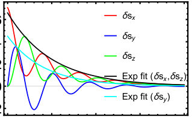
<figcaption class="paper-figure-caption"><b>Fig 1.</b> FIG. 1: Real-time dynamics of the Bloch-vector fluctuations δsx ( ), δsy ( ), and δsz ( ), with exponential fits shown for δsx and δsz ( ), and δsy ( ), for finite coupling (γx) and detuning (γz) noise.</figcaption>
</figure>
<figure class="paper-figure-card">
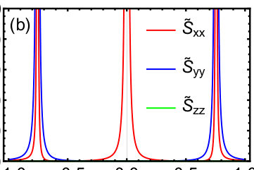
<figcaption class="paper-figure-caption"><b>Fig 2.</b> FIG. 2: Fluctuation matrix elements ( ˜S ii) as functions of the Feshbach detuning (ϵb). The components ˜S xx ( ), ˜S yy ( ), and ˜S zz ( ) are indicated by their respective colors. Panels show the cases where noise is present only in (a) the Feshbach coupling (γx) and (b) the detuning (γz).</figcaption>
</figure>
<figure class="paper-figure-card">
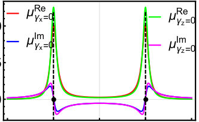
<figcaption class="paper-figure-caption"><b>Fig 3.</b> FIG. 3: Kubo spectral mobility, µ( ¯ω), versus driving frequency ¯ω. The real part, µRe, is shown for (γx , 0, γz = 0) ( ) and (γz , 0, γx = 0) ( ), while the imaginary part, µIm, is shown for (γx , 0, γz = 0) ( ) and (γz , 0, γx = 0) ( ). Here, γx and γz represent noise in the Feshbach coupling ˜g and the detuning ϵb, respectively. The symbols ( ) mark µIm at the dynamic resonance frequencies ±ωs.</figcaption>
</figure>
<figure class="paper-figure-card">
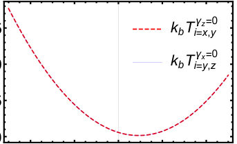
<figcaption class="paper-figure-caption"><b>Fig 4.</b> FIG. 5: Temperature (Ti) as a function of detuning (ϵb) for coupling noise only (γx , 0, γz = 0; ) and detuning noise only (γz , 0, γx = 0; ).</figcaption>
</figure>
<figure class="paper-figure-card">
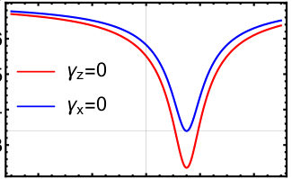
<figcaption class="paper-figure-caption"><b>Fig 5.</b> FIG. 6: Phase difference (Φ) plotted as a function of detuning (ϵb) for coupling noise (γx , 0, γz = 0) and detuning noise (γz , 0, γx = 0), denoted by the ( ) and ( ) curves, respectively.</figcaption>
</figure>
</div>

<p><strong>Summary.</strong> The paper theoretically examines how coupled atomic and molecular BECs behave when subjected to external noise affecting their coupling strength and detuning. By mapping the system onto a Bloch sphere, the authors calculate fluctuation spectra and response functions. The key finding is that these noisy dynamics reveal optimal control points near the Feshbach resonance, maximizing power transfer efficiency.</p>
<p><strong>Why it may be interesting.</strong> This work directly addresses non-equilibrium quantum dynamics in a highly relevant experimental platform (BECs via Feshbach resonances), providing quantitative tools to understand noise effects on coherence and energy transfer.</p>
<details>
<summary>Detailed structure</summary>
<p><strong>Main problem.</strong> The study investigates out-of-equilibrium properties of coupled atomic and molecular Bose-Einstein condensates (BECs) when the coupling and detuning are subjected to Gaussian white noise.</p>
<p><strong>Main result.</strong> Noise significantly enhances diffusive dynamics, and the system exhibits a dynamical resonance where optimal power utilization and quality factor are achieved near the Feshbach resonance.</p>
<p><strong>Method.</strong> The analysis employs a bosonic Josephson junction framework using a Bloch vector description, calculating fluctuation spectra via drift ($\Gamma$) and diffusion ($D$) matrices derived from linearized stochastic differential equations.</p>
<p><strong>Model / system.</strong> The system consists of coupled atomic (A) and molecular (M) BECs interacting near a Feshbach resonance. The dynamics are modeled using a two-state system mapped onto the Bloch sphere, incorporating noise in both coupling and detuning parameters.</p>
<p><strong>Key observables.</strong> Fluctuation spectra ($ ilde{S}_{ii}$), dynamic mobility ($\mu(ar{\omega})$) (real/imaginary parts), effective temperature ($k_B T_i$), and phase difference ($\Phi$).</p>
<p><strong>Important parameters / regimes.</strong> Feshbach detuning ($\epsilon_b$), Feshbach coupling noise ($\gamma_x$), and detuning noise ($\gamma_z$).</p>
<p><strong>Assumptions / limitations.</strong> The A-BEC and M-BEC are treated as single-mode condensates, neglecting spatial fluctuations; noise is modeled as Gaussian white noise.</p>
<p><strong>Figures summary.</strong> Figures show the dependence of fluctuation matrix elements ($  ilde{S}_{ii}$) on Feshbach detuning for different noise sources, and plots illustrate dynamic mobility and effective temperature versus detuning.</p>
<p><strong>Paper structure.</strong> The paper progresses from defining the Hamiltonian and stochastic dynamics (using Bloch vector representation) to calculating correlation functions using drift/diffusion matrices. It then analyzes the resulting fluctuation spectra and response function under periodic driving, culminating in characterizing resonance conditions near the Feshbach point.</p>
</details>
<details>
<summary>Abstract</summary>
<p>We investigate out-of-equilibrium properties of atomic molecular Bose Einstein condensates coupled through a Feshbach resonance, with the Feshbach coupling and detuning subject to Gaussian white noise. Using a bosonic Josephson junction framework and a Bloch sphere description, we examine the interplay of detuning, coherence, and noise governing the system dynamics. Coupling and detuning noise produce distinct fluctuation spectra, featuring both Feshbach resonant and symmetric off resonant peaks. We characterize the dispersive and absorptive response of the atom dimer system under periodic driving. The atom molecule hybridization at the Feshbach resonance maximizes the linewidth and minimizes both the effective temperature and the phase difference between the driving field and the system. This leads to an optimized power utilization and quality factor.</p>
</details>
<p><sub><a href="#top">↑ back to top</a></sub></p>

<p><a id="paper-2608.11630"></a></p>
<h3 id="full-stack-high-volume-quantum-networking-architecture-based-on-photonic-integrated-tin-vacancy-centers-in-diamond"><a href="http://arxiv.org/abs/2608.11630v1">Full-Stack High-Volume Quantum Networking Architecture based on Photonic-Integrated Tin Vacancy Centers in Diamond</a></h3>
<p><strong>Authors:</strong> Hamza Raniwala, Ian Christen, Helaman Flores, David Starling, Ryan Murphy, Eric Bersin, Kevin Chen, Marc Davis, Maxim Sirotin, Mahmoud Jalali Mehrabad, Ethan G. Arnault, Matthew E. Trusheim, P. B. Dixon, Dirk R. Englund<br>
<strong>Type:</strong> both · <strong>Category:</strong> quantum information and computing · <strong>PDF:</strong> <a href="https://arxiv.org/pdf/2608.11630v1">https://arxiv.org/pdf/2608.11630v1</a><br>
<strong>Analysis basis:</strong> full PDF text, analyzed in chunks
<strong>Topic relevance:</strong> 🔥 <code>QC/QI experiment</code> <strong>4/5</strong> · <code>analog quantum simulation</code> <strong>3/5</strong> · <code>methods for driven-dissipative</code> <strong>3/5</strong> · <code>quantum measurements</code> <strong>2/5</strong> · <code>quantum optics experiment</code> <strong>2/5</strong> · <code>Keldysh / 2PI / non-Gaussian methods</code> <strong>1/5</strong> · <code>Tavis-Cummings &amp; cavity-many-emitter</code> <strong>1/5</strong> · <code>driven-dissipative phase transition</code> <strong>1/5</strong> · <code>interference shaping light</code> <strong>1/5</strong></p>
<div class="figure-strip-hint">↔ Scroll figures horizontally</div>
<div class="paper-figures-scroll">
<figure class="paper-figure-card">
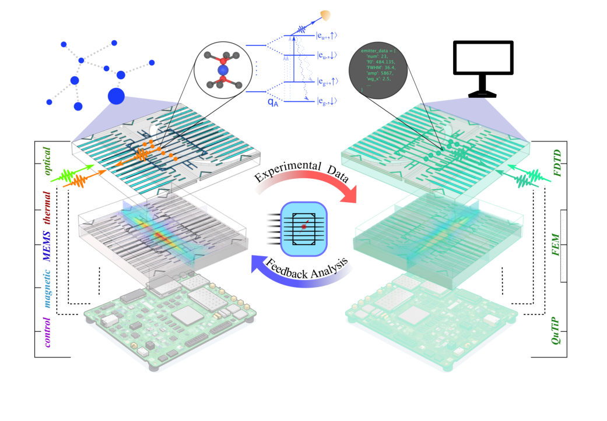
<figcaption class="paper-figure-caption"><b>Fig 1.</b> Figure 1. Engineering a full-stack blueprint of a QR-PIC. The left hand side of the figure diagrammatically depicts real-world components of a quantum network, including an entangled network (blue dots) where each node consists of a QR-PIC (left top) housing SnV−quantum emitters (inset). The QR-PIC exhibits multiphysics phenomena, including optical interfacing with SnV−emitters in nanophotonic waveguides (left second), thermal (left third) and controllable electromechanical (left fourth) strain effects perturbing quantum resources on-chip, magnetic field extents (left fifth) of coherent electromagnetic drives of SnV−electron spin qubits, and real-world electronics governed by a RFSoC (left...</figcaption>
</figure>
<figure class="paper-figure-card">
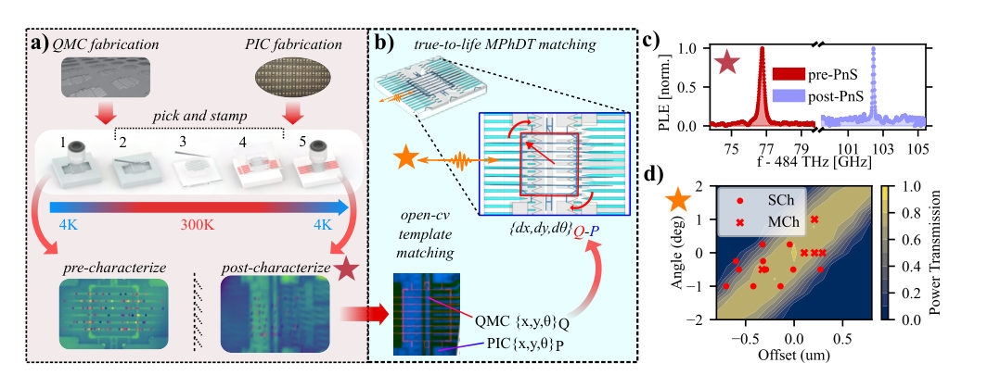
<figcaption class="paper-figure-caption"><b>Fig 2.</b> Figure 2. Development of physical and digital quantum repeater. (a) real-world development of the QR-PIC, starting from QMC and PIC fabrication components which are combined in a heterogeneous pick-and-stamp (PnS) procedure aligning a QMC to the PIC photonic integrated circuit. Emitters in the QMC are characterized using a widefield PLE (w-PLE) technique [17] to identify emitters pre- and post-PnS (red star). (b) digital twin sample construction, including a FEM and FDTD (not shown) software recreation from the sample planar geometry file. QMC (Q)-PIC (P) offsets are measured using an open-cv template matching algorithm, and these offsets (dx, dy, dθ)Q−P are passed to simulation to evaluate...</figcaption>
</figure>
<figure class="paper-figure-card">
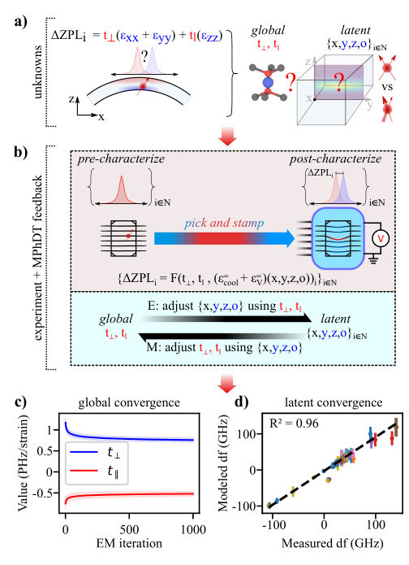
<figcaption class="paper-figure-caption"><b>Fig 3.</b> Figure 3. Experiment-analysis feedback revealing unknown global and local latent variables of SnV−quantum resources. (a) illustration of on-chip strain in a diamond waveguide gen- erating frequency shifts in the ZPL of a SnV−post-PnS and upon applied MEMS voltage. The ZPL shift is difficult to predict a priori due to the globally uncertain and underre- ported variables of tperp and tpar, as well as the latent vari- ables of each emitter (waveguide cross-sectional location, ori- entation). (b) Expectation-maximization (EM) algorithm run on seven experimental QMCs of the PnS procedure and ap- plied MEMS voltage on test chips. The ZPL shift of emitters in each sample are observed and recorded,...</figcaption>
</figure>
<figure class="paper-figure-card">
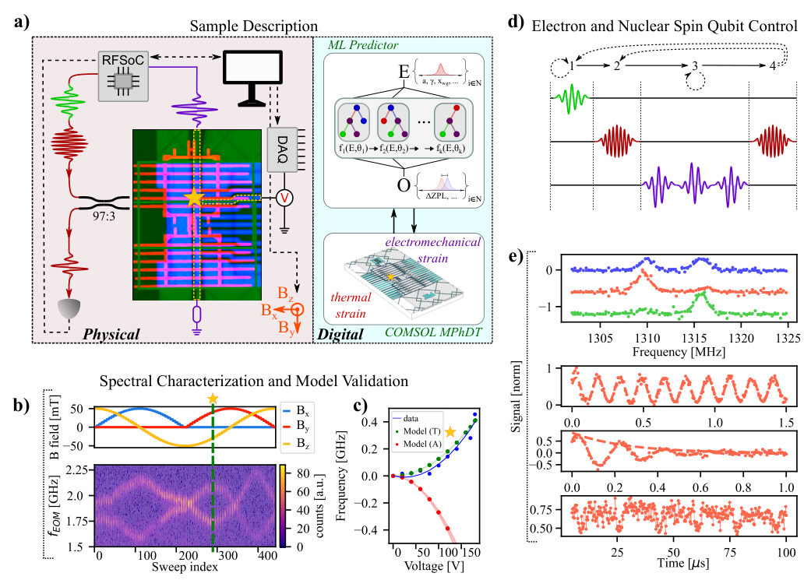
<figcaption class="paper-figure-caption"><b>Fig 4.</b> Figure 4. Robust control and model understanding of a sample emitter in a Bluefors cryostat. (a) sample constructed of a QR-PIC with two microchiplets stamped in the socket, with the targeted emitter pinpointed with a gold star. The emitter is modeled with an XGBoost model interacting with the sample MPhDT to provide expected spectral tuning parameters. (b) shows the spectral characterization of the targeted emitter using magnetospectrosocpy (left) and MEMS voltage-tuned strain spectrosocopy (right). The digital twin model captures, with root-mean-squared error of 30 MHz up to 100 V, the transverse orientation and ZPL shift from zero voltage of the emitter. (d) knowledge of the emitter...</figcaption>
</figure>
<figure class="paper-figure-card">
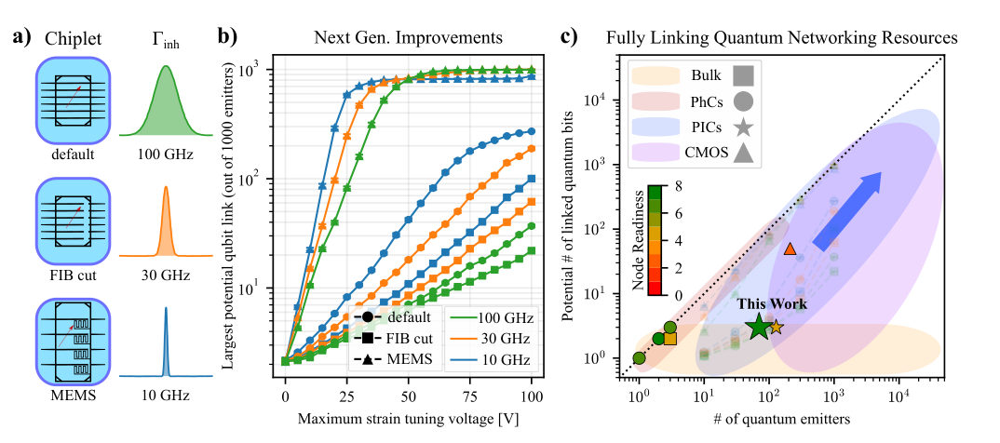
<figcaption class="paper-figure-caption"><b>Fig 5.</b> Figure 5. The MPhDT enables smarter design of next-generation QR-PICs. (a) exploring the QMC sample space by varying an input QMC to a disjoint set union (DSU) algorithm, where unions are made between emitters when one emitter’s ZPL strain tuning curve overlaps with another emitter’s curve at any voltage of both curves (assuming local tuning shown in this work). Chiplet types are varied from the default and FIB-cut waveguide QMCs (both in this work) to MEMS-designed single-sided cantilever waveguides. The inhomogeneous linewidth Γinh of SnV−emitters is also varied from 100 GHz (observed in this work) to 10 GHz (4 GHz observed in [34]), providing a 2D matrix of targeted QMC improvements. (b)...</figcaption>
</figure>
</div>

<p><strong>Summary.</strong> The paper presents a breakthrough 'full-stack' architecture integrating SnV- emitters into photonic chips for quantum networking. By coupling experimental measurements with a Multiphysics Digital Twin, the authors successfully characterized strain effects and demonstrated simultaneous control over spectral tuning, electron spin, and nuclear spins. This work establishes a robust platform roadmap toward realizing large-scale, high-connectivity quantum repeaters.</p>
<p><strong>Why it may be interesting.</strong> This work directly addresses the engineering challenges in solid-state quantum networking by providing a comprehensive, multi-physics framework to overcome emitter disorder and enable scalable entanglement distribution.</p>
<details>
<summary>Detailed structure</summary>
<p><strong>Main problem.</strong> Scaling solid-state quantum emitters for distributed quantum entanglement is limited by emitter frequency inhomogeneity, environmental variations, and difficulty in achieving scalable coherent control.</p>
<p><strong>Main result.</strong> The authors demonstrated a full-stack architecture enabling simultaneous spectral tuning, spin readout, and nuclear spin control, proposing a roadmap to achieve high connectivity ($N \sim 1000$) for quantum repeaters.</p>
<p><strong>Method.</strong> A combination of experimental characterization (strain mapping, spin echo measurements) and advanced computational modeling using a Multiphysics Digital Twin (MPhDT) guided by Expectation-Maximization algorithms was employed.</p>
<p><strong>Model / system.</strong> The platform integrates SnV- quantum emitters in diamond nanophotonic microchiplets (QMC) onto a frequency-tunable silicon nitride photonic integrated circuit (PIC). The MPhDT simulates electro-mechanical strain effects on the emitter's zero phonon line (ZPL) frequency.</p>
<p><strong>Key observables.</strong> GHz scale spectral tuning of ZPL, electron spin coherence time ($T_2 \sim 1	ext{ms}$), and measurable coupling efficiency between waveguides.</p>
<p><strong>Important parameters / regimes.</strong> Strain susceptibilities ($t_{\perp}, t_{\|}$), gate times ($<80\ 	ext{ns}$), and target connectivity of $99.96\%$ for large emitter arrays.</p>
<p><strong>Assumptions / limitations.</strong> The ability to model the complex interplay between strain, electric fields, and quantum emitter properties using coupled FEM/FDTD simulations is assumed for predictive control.</p>
<p><strong>Figures summary.</strong> Figures likely detail spectral tuning curves vs. voltage, spin echo decay plots (XY8 sequences), and simulation results showing achievable connectivity based on overlap criteria.</p>
<p><strong>Paper structure.</strong> The work progresses from identifying the limitations of current solid-state platforms to proposing a full-stack architecture ($    ext{QR-PIC}$), detailing the use of $   ext{MPhDT}$ for parameter extraction, demonstrating advanced control (spin/spectral tuning), and finally simulating scalability for large networks.</p>
</details>
<details>
<summary>Abstract</summary>
<p>Solid state quantum emitters are a leading platform for photonic quantum networking with memory nodes. However, the inhomogeneous distribution of quantum emitters, as well as several environmental factors (i.e. strain and electric fields) spread the frequency spectrum of the qubits, making them distinguishable and therefore not a reliable resource for distributed quantum entanglement. In this paper, we demonstrate a full-stack approach to integrating nearly indistinguishable tin vacancy (SnV$^-$) quantum emitters on a frequency-tunable photonic interposer that overcomes the native distribution and static variation of quantum emitters for an indistinguishable photonic quantum networking platform. We demonstrate a silicon nitride-on-insulator photonic integrated circuit (PIC) with accompanying multiphysics digital twin (MPhDT) that guides discovery of SnV$^-$ strain-tuning parameters and informs construction of a multi-channel quantum repeater node. On this node, we achieve the first simultaneous demonstration of spectral tuning of the zero phonon line (ZPL) at GHz scale; coherent electron spin control with gate times of $<80$ ns; strongly- and weakly-coupled nuclear spin detection; and commercial fiber array-coupled readout of a SnV$^-$ center. Finally, we propose and simulate improvements to the architecture that achieve 99.96% connectivity of $ N \sim 1000$ emitters spanning the inhomogeneous distribution of SnV$^-$ centers in strained diamond, where distributed quantum entanglement may be realized.</p>
</details>
<p><sub><a href="#top">↑ back to top</a></sub></p>

<p><a id="paper-2608.11319"></a></p>
<h3 id="modelling-quantum-measurement-dynamics-from-decoherence-to-redundancy-with-site-hopping-indistinguishable-particles"><a href="http://arxiv.org/abs/2608.11319v1">Modelling quantum measurement dynamics: from decoherence to redundancy with site-hopping indistinguishable particles</a></h3>
<p><strong>Authors:</strong> Katja Schneeweiss, Tom Rivlin, Maximilian P. E. Lock, Marcus Huber, Iva Březinová<br>
<strong>Type:</strong> theory · <strong>Category:</strong> other · <strong>PDF:</strong> <a href="https://arxiv.org/pdf/2608.11319v1">https://arxiv.org/pdf/2608.11319v1</a><br>
<strong>Analysis basis:</strong> full PDF text, analyzed in chunks
<strong>Topic relevance:</strong> 🔥 <code>analog quantum simulation</code> <strong>4/5</strong> · 🔥 <code>quantum measurements</code> <strong>4/5</strong> · <code>correlated / nonlocal dissipation</code> <strong>3/5</strong> · <code>methods for driven-dissipative</code> <strong>3/5</strong> · <code>driven-dissipative phase transition</code> <strong>2/5</strong> · <code>non-equilibrium universality</code> <strong>1/5</strong> · <code>scars &amp; prethermalization</code> <strong>1/5</strong></p>
<div class="figure-strip-hint">↔ Scroll figures horizontally</div>
<div class="paper-figures-scroll">
<figure class="paper-figure-card">
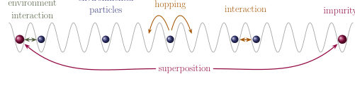
<figcaption class="paper-figure-caption"><b>Fig 1.</b> FIG. 1. A sketch of the model consisting of a discrete 1D lattice with hard-wall boundaries and MS sites (the sites are suggestively pictured as potential wells but in our model they are simply treated as abstract sites). The system contains NE = MS/2 indistinguishable particles (fermions or hard- core bosons), which can hop from site to site and interact with each other via nearest-neighbour interactions. We refer to these particles as the environment. Additionally, the sys- tem contains one distinguishable particle, which we call the impurity, that is initially in a superposition of being at the left- and right-most sites. It interacts with the environmental particles in the ensuing...</figcaption>
</figure>
<figure class="paper-figure-card">
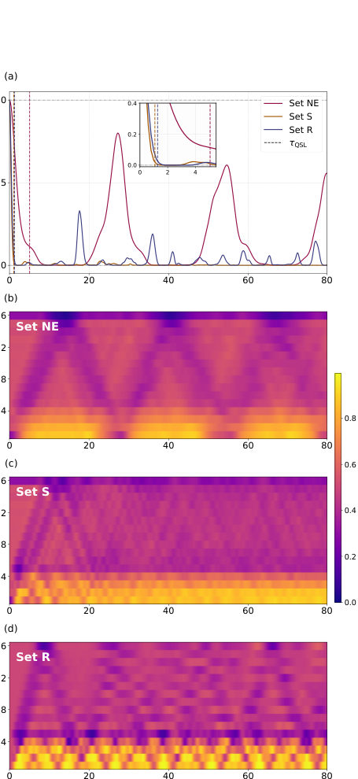
<figcaption class="paper-figure-caption"><b>Fig 2.</b> FIG. 2. Comparison of three parameter sets for fermions with MS = 16 and NE = 8. See Tab. II for the parameter values. The vertical dashed lines in subfigure (a) mark τQSL from Eq. 21 for each case. (a) shows D(t) as a function of time. (b-d) show, for each of the three cases, the probability of observing an environment particle at each lattice site over time, conditional on the impurity being at the left site, which are the diagonal elements of ˆDL 1 defined below.</figcaption>
</figure>
<figure class="paper-figure-card">
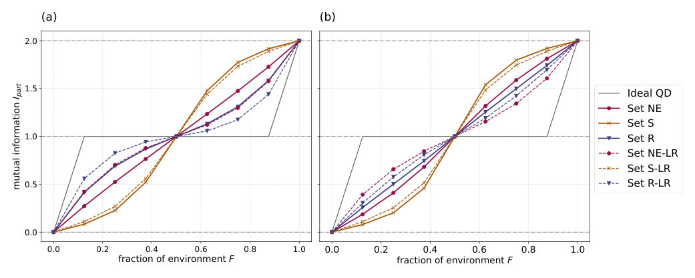
<figcaption class="paper-figure-caption"><b>Fig 3.</b> FIG. 3. The QMI IF/B part[I : ˆD1...p] for (a) fermions and (b) hard-core bosons. It is calculated using Eq. 14 as a function of the fraction of the environment F = p/NE using particle-based averaging. The six curves in each subfigure show different parameter sets from Tab. II, with MS = 16 and NE = 8. The timesteps at which these curves were calculated are given in the appendix in Table IV (they are the same for fermions and bosons). We also show an ‘Ideal QD’ curve indicating what an idealised quantum Darwinism model would predict.</figcaption>
</figure>
<figure class="paper-figure-card">
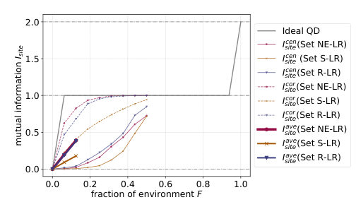
<figcaption class="paper-figure-caption"><b>Fig 4.</b> FIG. 4. The QMI based on traces over sites Isite (Eq. 19) for MS = 16 and NE = 8. (Fermions were used in this calculation but the result is identical for bosons.) Each curve represents a certain set of parameters from Tab. II, and different choices of X, the set of sites to average over. The set is either filled from the left and right edges of the system (labelled ‘corner’, Icor site), or from the centre of the system (labelled ‘centre’, Icen site), or we average over all possible choices for a given |X|: Iave site from Eq. 20. As before, we include an idealised QD curve. For each curve, the timestep at which the calculation was performed is listed in the appendix in Tab. IV.</figcaption>
</figure>
<figure class="paper-figure-card">
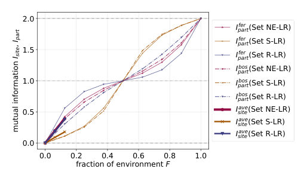
<figcaption class="paper-figure-caption"><b>Fig 5.</b> FIG. 5. Comparison between the averaged QMI based on traces over fermions and bosons IF/B part[I : ˆD1...p] (as in Fig. 3), and the QMI based on traces over sites ⟨Isite[I : ˆρX]⟩|X| (as in Fig. 4). For two of the parameter sets, the three different QMIs agree with each other.</figcaption>
</figure>
</div>

<p><strong>Summary.</strong> This paper develops and analyzes a flexible many-body model—a 1D lattice with hopping indistinguishable particles—to study how quantum measurement dynamics proceed from decoherence toward classical redundancy. By incorporating particle statistics (fermions vs. bosons), the authors demonstrate that these fundamental details significantly alter the emergence of objective information, providing crucial theoretical alignment for future experiments using ultracold atoms.</p>
<p><strong>Why it may be interesting.</strong> This work directly addresses fundamental questions about quantum-to-classical transition using a highly tunable model inspired by ultracold atom simulators, making it highly relevant to AMO physics research in open quantum systems.</p>
<details>
<summary>Detailed structure</summary>
<p><strong>Main problem.</strong> The paper models quantum measurement dynamics, specifically investigating the transition from decoherence to redundancy within the framework of Quantum Darwinism (QD) using realistic many-body systems.</p>
<p><strong>Main result.</strong> Particle statistics significantly impact QD properties, showing that fermionic environments can achieve information redundancy more readily than bosonic or site-based ones. The model successfully reproduces known decoherence dynamics by tuning parameters.</p>
<p><strong>Method.</strong> The authors use numerically exact time evolution simulations on a 1D lattice to calculate quantum observables like Quantum Mutual Information (QMI) and environmental entropy.</p>
<p><strong>Model / system.</strong> The system is a 1D lattice containing an impurity particle interacting with an environment composed of indistinguishable hopping particles (fermions or hard-core bosons). The Hamiltonian includes terms for environment hopping ($\hat{H}_E$) and interaction between the impurity and environment ($\hat{H}_{IE}$).</p>
<p><strong>Key observables.</strong> Quantum Mutual Information (QMI), decoherence parameter $D(t)$, environmental entropy, and indicators of classicality like equilibration and redundancy.</p>
<p><strong>Important parameters / regimes.</strong> $W_{EE}$ (environment interaction strength), $W_{IE}$ (impurity-environment coupling), and the particle statistics (fermionic vs. bosonic).</p>
<p><strong>Assumptions / limitations.</strong> The analysis assumes that measurements must be performed at times when the decoherence parameter $D(t) \approx 0$ for a fair QMI assessment, and it simplifies by setting $\hat{H}_I = 0$.</p>
<p><strong>Figures summary.</strong> Figures illustrate the time evolution of QMI showing the loss of an initial 'redundancy plateau' due to environment-environment interactions. They also show how revival characteristics decrease with increasing system size.</p>
<p><strong>Paper structure.</strong> The paper introduces the model, details methods for handling indistinguishable particles in environmental entropy calculations, analyzes the effect of particle statistics on QD properties via QMI measurements over time, and discusses the implications for aligning theory with experiments.</p>
</details>
<details>
<summary>Abstract</summary>
<p>In recent years, new theoretical insights into decoherence and quantum measurements have emerged through the study of many-body dynamics in isolated quantum systems. It is now understood that the parameters and energy scales in system-environment interactions decisively affect how readily information spreads from a quantum system into its surroundings during a decoherence event. A popular choice for studying these effects is the framework of quantum Darwinism (QD), but so far few works have applied this to realistic many-body models. Inspired by experimentally-accessible setups, in this work we introduce a simple, flexible, numerically exact many-body model of a system broadcasting information into an environment: a 1D lattice of sites with hopping particles. We show that different choices of parameters lead to the recovery of known scenarios featuring different decoherence and QD effects, such as equilibration, revivals of coherence, and redundancy. In constructing this model we resolve the crucial issue of indistinguishability: we explain how to calculate the entropy of a fraction of the environment when said environment is composed of indistinguishable fermions or bosons (or lattice sites containing them). We then show that particle statistics can make a notable difference to the QD properties of the setup, with fermionic environments sometimes achieving redundancy much more readily than bosonic or site-based ones. Our work opens the door to much closer alignment between theoretical models and experimental tests of the dynamics of quantum measurements and the quantum-to-classical transition.</p>
</details>
<p><sub><a href="#top">↑ back to top</a></sub></p>

<p><a id="paper-2608.12154"></a></p>
<h3 id="shortcuts-to-parameter-sweeps"><a href="http://arxiv.org/abs/2608.12154v1">Shortcuts to Parameter Sweeps</a></h3>
<p><strong>Authors:</strong> Chi Xiang, Guodong Cheng, Geng Li<br>
<strong>Type:</strong> theory · <strong>Category:</strong> statistical mechanics · <strong>PDF:</strong> <a href="https://arxiv.org/pdf/2608.12154v1">https://arxiv.org/pdf/2608.12154v1</a><br>
<strong>Analysis basis:</strong> full PDF text, analyzed in chunks
<strong>Topic relevance:</strong> 🔥 <code>analog quantum simulation</code> <strong>4/5</strong> · <code>driven-dissipative phase transition</code> <strong>3/5</strong> · <code>methods for driven-dissipative</code> <strong>3/5</strong> · <code>Keldysh / 2PI / non-Gaussian methods</code> <strong>2/5</strong> · <code>non-equilibrium universality</code> <strong>2/5</strong> · <code>quantum measurements</code> <strong>2/5</strong> · <code>correlated / nonlocal dissipation</code> <strong>1/5</strong> · <code>scars &amp; prethermalization</code> <strong>1/5</strong></p>
<div class="figure-strip-hint">↔ Scroll figures horizontally</div>
<div class="paper-figures-scroll">
<figure class="paper-figure-card">
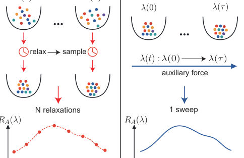
<figcaption class="paper-figure-caption"><b>Fig 1.</b> FIG. 1. Point-by-Point Relaxation versus Single-Sweep Con- tinuous Response Estimation. Left: In conventional ap- proaches, the system is simulated independently at a sequence of discrete parameter values λi. At each parameter value, the system must first relax to the corresponding stationary state before the observable RA(λi) is sampled. The response curve is subsequently reconstructed from these discrete mea- surements. Right: In STPS, the control parameter λ(t) is continuously swept from λ(0) to λ(τ), while an auxiliary con- trol ensures that the system evolves according to the instan- taneous stationary-state distribution throughout the sweep. Consequently, STPS estimates the continuous...</figcaption>
</figure>
<figure class="paper-figure-card">
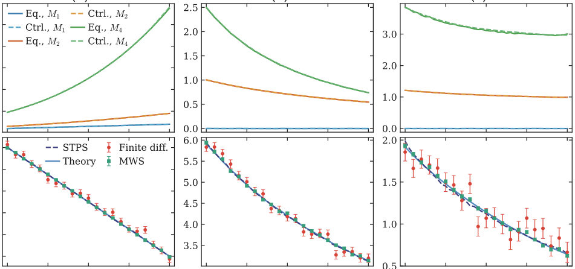
<figcaption class="paper-figure-caption"><b>Fig 2.</b> FIG. 2. Numerical validation of STPS for continuous response estimation. (a) Translated harmonic trap, Uo = kx2/2 −λx, with k = 2. (b) Interacting many-body system, Uo = a P</figcaption>
</figure>
</div>

<p><strong>Summary.</strong> The paper introduces Shortcuts to Parameter Sweeps (STPS), an advanced technique to calculate how system properties change with respect to varying control parameters ($\lambda$). By engineering a controlled trajectory, STPS estimates the entire continuous response curve from just one simulation run. This offers a significant computational advantage over traditional methods that require running many independent simulations.</p>
<p><strong>Why it may be interesting.</strong> This is highly relevant for studying open quantum systems or many-body dynamics where parameters (like coupling strengths or external driving frequencies) are varied slowly. It provides a computational shortcut to map out parameter landscapes without prohibitive simulation costs.</p>
<details>
<summary>Detailed structure</summary>
<p><strong>Main problem.</strong> The core challenge is efficiently calculating how stationary expectations (response functions) change when system parameters are varied over a wide range, as standard methods require costly repeated sampling.</p>
<p><strong>Main result.</strong> The proposed Shortcuts to Parameter Sweeps (STPS) framework allows estimating the continuous response curve from a single controlled simulation sweep, providing an efficient, sample-based alternative to traditional methods.</p>
<p><strong>Method.</strong> STPS engineers an auxiliary control field to guide the system's probability density along the instantaneous stationary manifold during one finite-time sweep. This leverages covariance-based response relations derived from transport theory.</p>
<p><strong>Model / system.</strong> The method is general, applicable to both equilibrium and non-equilibrium steady-state systems, including many-body interacting particle models (e.g., trapped or rotating systems).</p>
<p><strong>Key observables.</strong> Stationary response functions $\langle A 
angle_\lambda$ and their derivatives with respect to the parameter $\lambda$, denoted $R_A(\lambda)$.</p>
<p><strong>Important parameters / regimes.</strong> The control parameter $\lambda$ is swept over a broad range; simulation details include time scales ($ au$) and dimensionality.</p>
<p><strong>Assumptions / limitations.</strong> Assumes that the stationary density $
ho_{st}$ can be characterized, even if unknown analytically. Learned implementations introduce errors related to score matching, escort field training, and finite sampling coverage.</p>
<p><strong>Figures summary.</strong> Figures compare Point-by-Point Relaxation (multiple runs) against STPS using a single controlled sweep for various physical systems (harmonic trap, interacting many-body).</p>
<p><strong>Paper structure.</strong> The paper introduces the limitation of standard methods, develops the theoretical basis linking response to stationary transport equations, details the practical implementation using learned fields (GNNs), and validates the approach by comparing results against established finite difference techniques.</p>
</details>
<details>
<summary>Abstract</summary>
<p>Efficient evaluation of stationary parametric sensitivities over broad parameter ranges is important for identifying influential training data, fitting force fields, and predicting material responses, but standard pointwise approaches require repeated relaxation and sampling. Here we introduce Shortcuts to Parameter Sweeps (STPS), an engineered control strategy that uses an auxiliary control to transport the probability density along a prescribed family of instantaneous stationary states during a finite-time parameter sweep. This enables the continuous response curve over the full parameter interval to be estimated from a single controlled sweep using covariance-based response relations. STPS applies to both equilibrium and nonequilibrium steady-state systems, including those with unknown stationary distributions, and can be implemented directly using stationary samples in high-dimensional settings. Numerical tests on single-particle and interacting many-body systems show that STPS yields response curves in close agreement with reference results. These findings establish STPS as an efficient, sample-based framework for continuous sensitivity analysis in stochastic simulations.</p>
</details>
<p><sub><a href="#top">↑ back to top</a></sub></p>

<p><a id="paper-2608.11507"></a></p>
<h3 id="a-piston-like-polymer-stochastic-heat-engine"><a href="http://arxiv.org/abs/2608.11507v1">A piston-like polymer stochastic heat engine</a></h3>
<p><strong>Authors:</strong> Yi-Jui Chiu, Cheng-Hung Chang<br>
<strong>Type:</strong> both · <strong>Category:</strong> statistical mechanics · <strong>PDF:</strong> <a href="https://arxiv.org/pdf/2608.11507v1">https://arxiv.org/pdf/2608.11507v1</a><br>
<strong>Analysis basis:</strong> full PDF text, analyzed in chunks
<strong>Topic relevance:</strong> 🔥 <code>non-equilibrium universality</code> <strong>4/5</strong> · <code>driven-dissipative phase transition</code> <strong>3/5</strong> · <code>methods for driven-dissipative</code> <strong>3/5</strong> · <code>Frenkel-Kontorova</code> <strong>2/5</strong> · <code>Keldysh / 2PI / non-Gaussian methods</code> <strong>2/5</strong> · <code>correlated / nonlocal dissipation</code> <strong>1/5</strong> · <code>quantum measurements</code> <strong>1/5</strong> · <code>scars &amp; prethermalization</code> <strong>1/5</strong></p>
<div class="figure-strip-hint">↔ Scroll figures horizontally</div>
<div class="paper-figures-scroll">
<figure class="paper-figure-card">
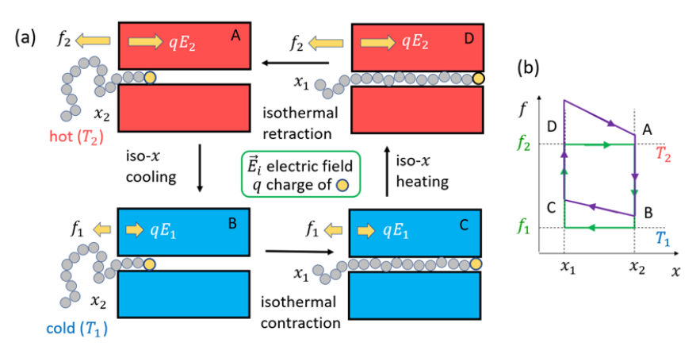
<figcaption class="paper-figure-caption"><b>Fig 1.</b> Figure 1. Construction and quasistatic cycle of the polymer engine. a, A terminal bead</figcaption>
</figure>
<figure class="paper-figure-card">

<figcaption class="paper-figure-caption"><b>Fig 2.</b> Figure 2. Thermodynamic validation of the isothermal branches. a, Entropic recoil force</figcaption>
</figure>
<figure class="paper-figure-card">

<figcaption class="paper-figure-caption"><b>Fig 3.</b> Figure 3a shows the crossover from work-consuming cycles at the fastest protocols to positive</figcaption>
</figure>
<figure class="paper-figure-card">
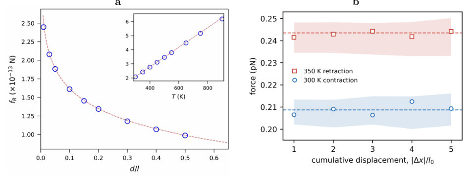
<figcaption class="paper-figure-caption"><b>Fig 4.</b> Fig. 3b shows the corresponding increase of efficiency toward ηC. Maximization within the</figcaption>
</figure>
<figure class="paper-figure-card">
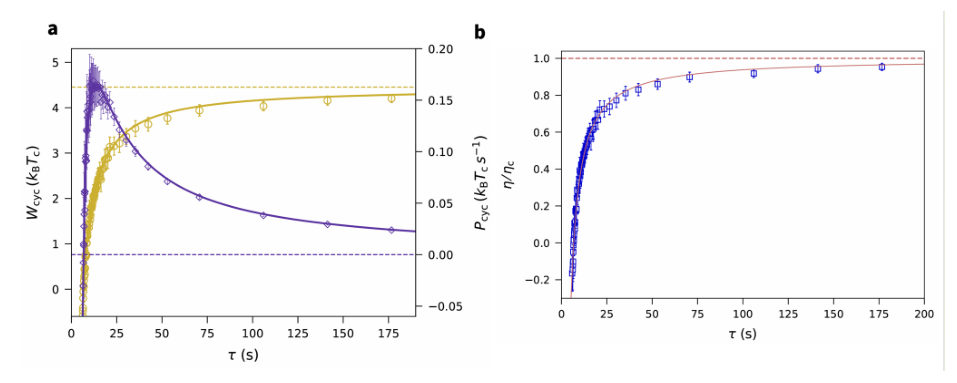
<figcaption class="paper-figure-caption"><b>Fig 5.</b> Figure 3. Finite-time performance at Tc = 300 K and Th = 350 K. a, Cycle work and power</figcaption>
</figure>
</div>

<p><strong>Summary.</strong> The authors introduce and analyze a novel stochastic heat engine based on polymer confinement that more closely mimics classical piston engines. By simulating cyclic work extraction under varying temperatures, they demonstrate the recovery of fundamental thermodynamic limits, such as Carnot efficiency, while also mapping out finite-time performance boundaries.</p>
<p><strong>Why it may be interesting.</strong> This work provides a concrete, mesoscopic realization of non-equilibrium thermodynamics principles (like the Jarzynski equality) in a polymer system, offering insights into how complex molecular dynamics can govern macroscopic energy conversion processes relevant to statistical mechanics.</p>
<details>
<summary>Detailed structure</summary>
<p><strong>Main problem.</strong> To develop a stochastic heat engine model that more accurately mimics macroscopic piston-cylinder engines compared to existing colloidal analogues, allowing for direct work calculation from the force-position diagram.</p>
<p><strong>Main result.</strong> The polymer-based engine successfully demonstrates characteristic features of thermal machines, recovering Carnot efficiency under ideal regeneration and following universal low-dissipation bounds in finite-time analysis.</p>
<p><strong>Method.</strong> The study uses both theoretical quasistatic cycle definitions (e.g., Jarzynski equality) and numerical simulations involving Langevin dynamics to calculate work, power, and efficiency across various driving speeds.</p>
<p><strong>Model / system.</strong> The system is a polymer chain confined in a narrow channel, modeled using bead-spring interactions governed by an overdamped Langevin equation. Work extraction occurs via cyclic processes involving isothermal contraction (cold) and retraction (hot).</p>
<p><strong>Key observables.</strong> Cycle work ($W_{	ext{cyc}}$), power ($P_{	ext{cyc}}$), efficiency ($\eta$), free energy change ($\Delta F$), and the force magnitude during isothermal strokes.</p>
<p><strong>Important parameters / regimes.</strong> Temperatures ($T_c=300$ K, $T_h=350$ K), channel width ($d/l$), cycle time ($    au_{    ext{cyc}}$), and coupling constants ($k_s$).</p>
<p><strong>Assumptions / limitations.</strong> The analysis often relies on the plateau approximation for the recoil force during isothermal strokes, and finite-time results are compared against low-dissipation theoretical bounds.</p>
<p><strong>Figures summary.</strong> Figures illustrate the engine cycle (force-position diagram), free energy reconstruction via Jarzynski equality, and plots showing work, power, and efficiency dependence on total cycle time ($   au_{    ext{cyc}}$) and temperature.</p>
<p><strong>Paper structure.</strong> The paper first establishes the theoretical framework by defining the polymer engine cycle and calculating quasistatic limits. It then proceeds to numerical simulations, validating force measurements using iso-force analysis and analyzing finite-time performance across various driving speeds to map out power-efficiency trade-offs.</p>
</details>
<details>
<summary>Abstract</summary>
<p>Colloidal stochastic engines are often regarded as microscopic analogues of macroscopic pis ton cylinder heat engines. However, although they share some underlying physical principles, such systems remain far from being direct force generators from a practical perspective. Motivated by this limitation, the present study introduces a polymer-based stochastic engine that more closely mimics the operation of piston cylinder engines. In this setup, heat is converted into work through a cyclic process in which a polymer is pulled into and out of a narrow channel under varying tem peratures. The work performed by the engine can be directly obtained from the cyclic trajectory in the force position diagram, analogous to the pressure volume diagram in traditional heat engines. Despite its much higher number of degrees of freedom compared to colloidal engines, the polymer en gine nevertheless follows several characteristic features observed in such systems. Numerical results demonstrate consistency with universal low-dissipation bounds for e ciency, recovery of Carnot e ciency under regeneration, and low-dissipation scaling of work and power.</p>
</details>
<p><sub><a href="#top">↑ back to top</a></sub></p>

<p><a id="paper-2608.12178"></a></p>
<h3 id="floquet-resolved-dissipation-selects-entanglement-beyond-population-spectroscopy"><a href="http://arxiv.org/abs/2608.12178v1">Floquet-Resolved Dissipation Selects Entanglement Beyond Population Spectroscopy</a></h3>
<p><strong>Authors:</strong> Gianluigi Pacino, Rosario Nicosia, Alessandro Ridolfo<br>
<strong>Type:</strong> theory · <strong>Category:</strong> other · <strong>PDF:</strong> <a href="https://arxiv.org/pdf/2608.12178v1">https://arxiv.org/pdf/2608.12178v1</a><br>
<strong>Analysis basis:</strong> full PDF text, analyzed in chunks
<strong>Topic relevance:</strong> 🔥 <code>methods for driven-dissipative</code> <strong>4/5</strong> · <code>Keldysh / 2PI / non-Gaussian methods</code> <strong>3/5</strong> · <code>correlated / nonlocal dissipation</code> <strong>3/5</strong> · <code>analog quantum simulation</code> <strong>2/5</strong> · <code>quantum measurements</code> <strong>2/5</strong> · <code>Tavis-Cummings &amp; cavity-many-emitter</code> <strong>1/5</strong> · <code>driven-dissipative phase transition</code> <strong>1/5</strong> · <code>non-equilibrium universality</code> <strong>1/5</strong></p>
<div class="figure-strip-hint">↔ Scroll figures horizontally</div>
<div class="paper-figures-scroll">
<figure class="paper-figure-card">
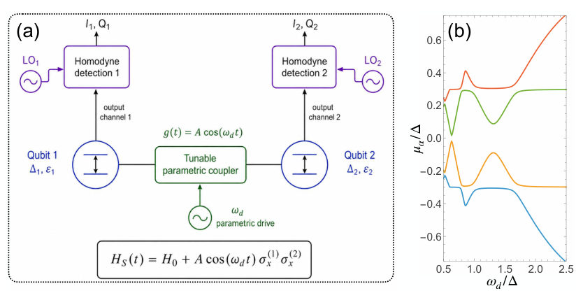
<figcaption class="paper-figure-caption"><b>Fig 1.</b> FIG. 1. Parametrically coupled qubits and Floquet spectrum. (a) Minimal scheme of two effective qubits with static transverse coupling contained in H0 and a tunable interaction modulated as g(t) = A cos(ωdt). Each qubit is coupled to an independent output channel, shown with phase-sensitive homodyne detection of the two quadratures. (b) Four Floquet quasienergies µα, folded into the first Brillouin zone, as a function of ωd/∆. Avoided crossings mark the multiphoton resonances at which the drive hybridizes different excitation sectors. Parameters are ∆1 = ∆2 = ∆, ϵ1/∆= 0.1, ϵ2/∆= 0, g0/∆= 0.3, and A/∆= 1.</figcaption>
</figure>
<figure class="paper-figure-card">
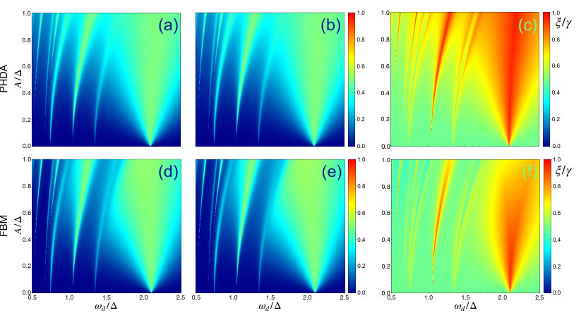
<figcaption class="paper-figure-caption"><b>Fig 2.</b> FIG. 2. Period-averaged dressed populations and Liouvillian gap. The upper (lower) row corresponds to PHDA (FBM). Panels (a,d) and (b,e) show the period-averaged dressed populations of qubits 1 and 2, respectively, while panels (c,f) show the scaled Liouvillian gap ξ/γ, with ξ = minj̸=0[−Re(λj)]. All color scales range from 0 to 1. Parameters are ∆1 = ∆2 = ∆, ϵ1/∆= 0.1, ϵ2/∆= 0, g0/∆= 0.3, T1 = T2 = 0, and γ/∆= 10−3 for Ohmic reservoirs.</figcaption>
</figure>
<figure class="paper-figure-card">
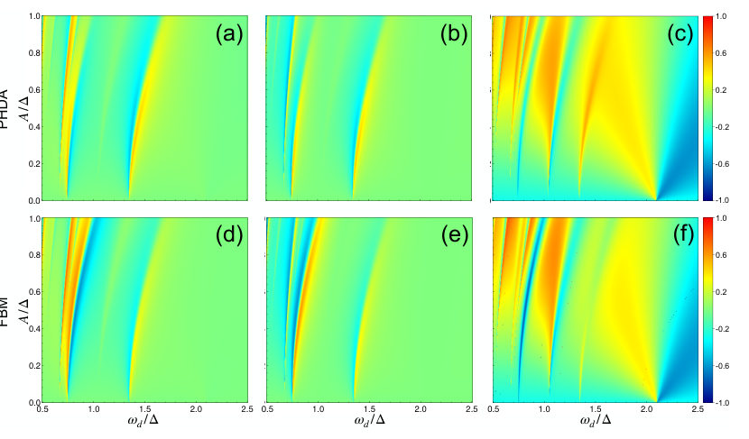
<figcaption class="paper-figure-caption"><b>Fig 3.</b> FIG. 3. Phase-resolved coherence-sensitive observables. All quantities are evaluated at t0 = τ/2. The upper (lower) row corresponds to PHDA (FBM). Panels (a,d), (b,e), and (c,f) display X1, X2, and the symmetrized mixed quantity X12, respectively. All panels share the same scale, ranging from −1 to 1, so that differences in the amplitude, width, and shape of the resonant structures can be compared directly. The plotted quantities are system observables, and their relation to calibrated output signals, including the corresponding spectral factors, is given in Appendix A. Parameters are the same as in Fig. 2.</figcaption>
</figure>
<figure class="paper-figure-card">
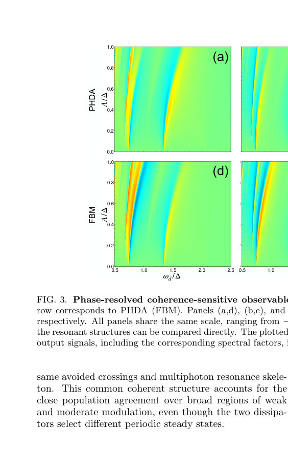
<figcaption class="paper-figure-caption"><b>Fig 4.</b> Figure 2 shows where that agreement becomes visi- bly less accurate. The resonance positions remain com- mon to both descriptions, but appreciable differences are mainly evident once the modulation reaches A/∆≳ 0.3. In particular, the FBM population maps develop a stronger asymmetry than PHDA and show a suppres- sion on the left side of the resonant tongue that emerges near ωd/∆≃2.1. These features are much less pro- nounced in the PHDA maps. The relaxation-gap panels display a clearer reorganization of the decay structure. Thus the population comparison supports the conserva- tive conclusion that the two methods reproduce essen- tially the same resonance skeleton and remain close over a...</figcaption>
</figure>
<figure class="paper-figure-card">
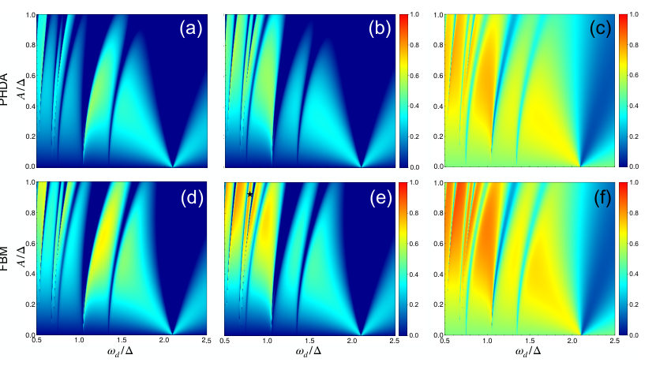
<figcaption class="paper-figure-caption"><b>Fig 5.</b> FIG. 4. Concurrence and phase-anchored Floquet fidelity. The upper row is calculated with PHDA and the lower row with FBM. The left and middle columns show Wootters’ concurrence C(t0) at t0/τ = 0 [panels (a,d)] and t0/τ = 1/2 [panels (b,e)]. The right column [panels (c,f)] shows the overlap FB,0(τ/2) with the Floquet Bell-like reference |ΨF B(0)⟩= [|Φ1(0)⟩−|Φ4(0)⟩]/ √</figcaption>
</figure>
</div>

<p><strong>Summary.</strong> The paper investigates how different theoretical methods describe dissipation in periodically driven qubits. By comparing the Partial Harmonic Decomposition Approach (PHDA) and Floquet-Born-Markov (FBM) theory, the authors demonstrate that while both predict similar average populations, they yield vastly different predictions for entanglement. This establishes that coherence-sensitive observables are essential benchmarks for accurate open quantum state engineering.</p>
<p><strong>Why it may be interesting.</strong> This work directly addresses the practical challenges of modeling open quantum systems under strong periodic driving, providing a crucial diagnostic tool (coherence measurements) that surpasses simple population monitoring in validating theoretical models.</p>
<details>
<summary>Detailed structure</summary>
<p><strong>Main problem.</strong> To determine if population spectroscopy is a sufficient benchmark for validating open Floquet quantum-state engineering, showing that dissipation selects entanglement beyond what can be inferred from populations alone.</p>
<p><strong>Main result.</strong> The comparison between two theoretical descriptions (PHDA and FBM) shows that while they yield similar average populations, the asymptotic entanglement predicted by the more rigorous Floquet-Born-Markov theory is substantially stronger than that predicted by PHDA.</p>
<p><strong>Method.</strong> The authors compare two methods for solving the time-dependent master equation in periodically driven systems: Partial Harmonic Decomposition Approach (PHDA) and Floquet-Born-Markov (FBM) theory, analyzing their predictions for entanglement.</p>
<p><strong>Model / system.</strong> The model consists of two transversely coupled qubits whose interaction is modulated parametrically by a cosine function. The dynamics are governed by a time-dependent master equation solved using both PHDA and FBM formalisms.</p>
<p><strong>Key observables.</strong> Period-averaged populations, phase-resolved single- and two-qubit coherence observables, and Concurrence (a measure of entanglement).</p>
<p><strong>Important parameters / regimes.</strong> Modulation strength ($A$), drive frequency ($\omega$), and the ratio $\omega_d/\Delta$. The comparison is sensitive to increasing modulation strength.</p>
<p><strong>Assumptions / limitations.</strong> The PHDA approach is an approximation to FBM, valid in the weak-dressing regime but not equivalent. The analysis relies on verifying secularity conditions ($R_{\min} \gg 1$) for rate equations to be applicable.</p>
<p><strong>Figures summary.</strong> Figures show period-averaged dressed populations and Liouvillian gaps comparing PHDA and FBM across varying drive parameters, while other figures illustrate coherence observables revealing discrepancies as modulation increases.</p>
<p><strong>Paper structure.</strong> The paper establishes the problem by noting that population agreement is insufficient. It then details the two theoretical frameworks (PHDA vs. FBM), compares their predictions using various diagnostics (populations, coherence, concurrence), and concludes by establishing coherence-sensitive observables as the necessary validation test for open Floquet engineering.</p>
</details>
<details>
<summary>Abstract</summary>
<p>Reliable quantum-state engineering in periodically driven devices requires more than reproducing their excitation spectrum: the environment must resolve the transitions of the driven system. We show that two dissipative descriptions of the same parametrically coupled qubits can yield closely similar period-averaged populations yet qualitatively different asymptotic entanglement. Both retain the complete periodically driven Hamiltonian, the same microscopic bath couplings, and the same physical observables; they differ in the dynamical representation used to resolve the dissipative channels and the corresponding system operators: the static dressed basis in the partial harmonic decomposition approach (PHDA) and the Floquet basis, including all relevant drive sidebands, in Floquet-Born-Markov (FBM) theory. The population maps preserve the same resonance skeleton and remain closely similar over broad low-to-moderate drive regions, while clearer differences emerge as the modulation becomes stronger. Phase-resolved single- and two-qubit coherence observables reveal a substantially stronger redistribution of amplitudes and phases. Concurrence amplifies this hidden state-level discrepancy: Floquet-resolved dissipation selects stronger and more extended Bell-like entangled regions and a larger overlap with a fixed Bell-like reference, while PHDA generally underestimates the entanglement and its thermal persistence. A channel-resolution test verifies the secular, completely positive FBM construction throughout the relevant parameter domain. Our results establish population agreement as an insufficient benchmark for open Floquet quantum-state engineering and identify coherence-sensitive observables as the decisive validation test.</p>
</details>
<p><sub><a href="#top">↑ back to top</a></sub></p>

<p><a id="paper-2608.11488"></a></p>
<h3 id="exchange-fluctuation-theorems-for-non-markovian-baths-in-quantum-collisional-model"><a href="http://arxiv.org/abs/2608.11488v1">Exchange Fluctuation Theorems for Non-Markovian Baths in Quantum Collisional Model</a></h3>
<p><strong>Authors:</strong> Sayan Mondal, Sukrut Mondkar, Ujjwal Sen<br>
<strong>Type:</strong> theory · <strong>Category:</strong> statistical mechanics · <strong>PDF:</strong> <a href="https://arxiv.org/pdf/2608.11488v1">https://arxiv.org/pdf/2608.11488v1</a><br>
<strong>Analysis basis:</strong> full PDF text, analyzed in chunks
<strong>Topic relevance:</strong> 🔥 <code>quantum measurements</code> <strong>4/5</strong> · <code>correlated / nonlocal dissipation</code> <strong>3/5</strong> · <code>methods for driven-dissipative</code> <strong>3/5</strong> · <code>non-equilibrium universality</code> <strong>3/5</strong> · <code>driven-dissipative phase transition</code> <strong>2/5</strong> · <code>Keldysh / 2PI / non-Gaussian methods</code> <strong>1/5</strong></p>
<div class="figure-strip-hint">↔ Scroll figures horizontally</div>
<div class="paper-figures-scroll">
<figure class="paper-figure-card">

<figcaption class="paper-figure-caption"><b>Fig 1.</b> Figure 1. Schematic diagram of the setup. (a) Collisional model describing heat exchange between two baths A and B. The red (blue) circles denote auxiliary units of bath A (B), each initially prepared in a Gibbs state at the corresponding bath temperature. Before the nth inter-bath collision, the neighboring auxiliaries within each bath undergo intra-bath interactions UAA and UBB, generating memory effects. The intra-bath interactions involve the nth and (n −1)th auxiliary unit of each bath. The initial state of the nth unit is the thermal Gibbs state, while that of the (n−1)th unit can be some athermal state. The subsequent effective interaction between the two baths is denoted by U eff...</figcaption>
</figure>
<figure class="paper-figure-card">

<figcaption class="paper-figure-caption"><b>Fig 2.</b> Figure 2. BLP measure of non-Markovianity of the collisional bath. The BLP measure of non-Markovianity, N, is shown as a function of the intra-bath coupling strength κ. The environment consists of auxiliary qubits interacting sequentially with a system qubit. Both the system and bath auxiliary qubits have energy split- ting ω = 1.0. Results are shown for two values of the system-bath coupling strength, g = 1.0 (blue solid) and g = 1.2 (orange dashed). The bath auxiliaries are initially prepared in Gibbs states with inverse temperature β = 1.0. Quantities plotted on both axes are dimension- less.</figcaption>
</figure>
<figure class="paper-figure-card">

<figcaption class="paper-figure-caption"><b>Fig 3.</b> Figure 3. XFT for direct bath-bath interaction. The left-hand side of Eq. (14) is plotted as a function of the intra-bath coupling strength κ. The bath auxiliaries are qubits with energy splitting ω = 1.0. Results are shown for bath-bath coupling strengths g = 1.0 and g = 1.2, comparing a Markovian and a non-Markovian bath A, while bath B remains non-Markovian. The inverse temperatures are βA = 1.0 and βB = 0.8. The black dashed line denotes the standard Markovian XFT prediction, e∆βω, corresponding to the right-hand side of Eq. (14) with Cdir M-M = 1. Quantities plotted on both axes are dimensionless.</figcaption>
</figure>
<figure class="paper-figure-card">

<figcaption class="paper-figure-caption"><b>Fig 4.</b> Figure 4. XFT for probe-mediated bath-bath interaction. The left-hand side of Eq. (20) is plotted as a function of the intra-bath coupling strength κ. The bath auxiliaries are qubits with energy split- ting ω = 1.0, and the probe is also taken to be a qubit with the same energy splitting. The probe is initially prepared in the Gibbs state at inverse temperature βA. Results are shown for bath-bath coupling strengths g = 1.0 and g = 1.2, comparing a Markovian and a non- Markovian bath A, while bath B remains non-Markovian. The in- verse temperatures are fixed at βA = 1.0 and βB = 0.8. The black dashed line represents the conventional Markovian XFT prediction, e∆βω, obtained in the absence of...</figcaption>
</figure>
</div>

<p><strong>Summary.</strong> This paper extends the quantum exchange fluctuation theorem to systems coupled to baths exhibiting memory effects (non-Markovianity). Using a collisional model, the authors derive generalized theorems showing that bath memory modifies the expected heat flow statistics. This establishes a microscopic link between environmental memory and non-equilibrium thermodynamics.</p>
<p><strong>Why it may be interesting.</strong> This work directly addresses how environmental memory modifies fundamental non-equilibrium relations like the Second Law, which is crucial for understanding energy transport in realistic quantum devices.</p>
<details>
<summary>Detailed structure</summary>
<p><strong>Main problem.</strong> The primary goal is generalizing the quantum exchange fluctuation theorem (XFT) to account for non-Markovian dynamics in open quantum systems undergoing heat exchange.</p>
<p><strong>Main result.</strong> Non-Markovian memory introduces an additional factor, modifying the conventional Jarzynski-Wójcik XFT and enhancing the probability of heat transfer against the temperature gradient.</p>
<p><strong>Method.</strong> The authors derive generalized XFTs by analyzing forward and reverse quantum trajectories within a microscopic collisional model framework.</p>
<p><strong>Model / system.</strong> The system is an open quantum system modeled using a quantum collisional approach involving two thermal baths (A and B) coupled via auxiliary units. Non-Markovianity arises from correlations between successive bath auxiliaries.</p>
<p><strong>Key observables.</strong> Heat transfer ($q$), probability ratios $p(q)/p(-q)$, and the non-Markovian factor $C$.</p>
<p><strong>Important parameters / regimes.</strong> Temperature differences ($eta_A, eta_B$) defining the temperature gradient; the degree of environmental memory.</p>
<p><strong>Assumptions / limitations.</strong> The derivation is performed in the steady-state regime using a microscopic collisional model structure.</p>
<p><strong>Figures summary.</strong> Figure 1 schematically illustrates the setup: (a) Collisional model for heat exchange, and (b) and (c) show the Two-Point Measurement protocol for direct vs. probe-mediated interaction.</p>
<p><strong>Paper structure.</strong> The paper builds from defining the standard XFT to introducing non-Markovianity via auxiliary correlations, deriving generalized theorems for two coupling mechanisms (direct/probe), and concluding with a modified second law incorporating the memory factor $C$.</p>
</details>
<details>
<summary>Abstract</summary>
<p>The quantum exchange fluctuation theorem relates the probabilities of observing heat transfer along and against the temperature gradient between thermal baths at different temperatures. We investigate how this relation generalizes when the baths exhibit non-Markovian dynamics. Using a microscopic collisional model, bath memory is generated through interactions between successive bath auxiliaries before each heat-exchange collision. We derive exchange fluctuation theorems for both direct bath-bath interactions and probe-mediated heat exchange in the steady-state regime. As an illustrative example, we consider heat baths with qubit auxiliaries and show that non-Markovian memory enhances the probability of heat-transfer events against the temperature gradient, modifying the predictions made by the conventional Jarzynski-Wójcik exchange fluctuation theorem. Our results establish a microscopic connection between environmental memory and non-equilibrium heat-exchange statistics.</p>
</details>
<p><sub><a href="#top">↑ back to top</a></sub></p>

<p><a id="paper-2608.11339"></a></p>
<h3 id="operational-identifiability-of-false-vacuum-decay-rates-in-the-quantum-ising-chain"><a href="http://arxiv.org/abs/2608.11339v1">Operational identifiability of false-vacuum decay rates in the quantum Ising chain</a></h3>
<p><strong>Authors:</strong> Boliang Yu, Ruixin Zhou, Hang Su<br>
<strong>Type:</strong> theory · <strong>Category:</strong> statistical mechanics · <strong>PDF:</strong> <a href="https://arxiv.org/pdf/2608.11339v1">https://arxiv.org/pdf/2608.11339v1</a><br>
<strong>Analysis basis:</strong> full PDF text, analyzed in chunks
<strong>Topic relevance:</strong> 🔥 <code>methods for driven-dissipative</code> <strong>4/5</strong> · <code>Keldysh / 2PI / non-Gaussian methods</code> <strong>3/5</strong> · <code>non-equilibrium universality</code> <strong>3/5</strong> · <code>driven-dissipative phase transition</code> <strong>2/5</strong> · <code>analog quantum simulation</code> <strong>1/5</strong> · <code>correlated / nonlocal dissipation</code> <strong>1/5</strong> · <code>quantum measurements</code> <strong>1/5</strong> · <code>scars &amp; prethermalization</code> <strong>1/5</strong></p>
<div class="figure-strip-hint">↔ Scroll figures horizontally</div>
<div class="paper-figures-scroll">
<figure class="paper-figure-card">

<figcaption class="paper-figure-caption"><b>Fig 1.</b> Figure 1. Analytic scale-conflict diagram defining the scale-only fitting region. The horizontal axis is the transverse field h⊥and the vertical axis is the target continuum action S0; both quantities are dimensionless. The blue, orange, dotted black, dashed red, and dash-dotted purple boundaries impose W ≥3, K ≤0.1, S0 ≥3, M0 ≥0.1 at L = 128, and T ≥3, respectively; the green area is the band satisfying all five analytic conditions. Throughout the figures J = ℏ= a = 1, so energies are measured in J and times in J−1. Initial-state, numerical, estimator-specific, size, geometry, and cross-engine checks are applied separately and are not shown here.</figcaption>
</figure>
<figure class="paper-figure-card">

<figcaption class="paper-figure-caption"><b>Fig 2.</b> Figure 2. Readout-dependent finite-time coefficients and local-slope stability. The horizontal axis lists readouts R1–R4 and the vertical axis gives their exact full-window coefficients at (h⊥, S0) = (0.75, 4) in units of 10−4J per site; error bars contain regression components only. Filled, hatched, and crossed bars distinguish the R1 plateau, the fixed-velocity R2 cross-check, and R3–R4 diagnostics that do not satisfy the local-plateau criterion.</figcaption>
</figure>
<figure class="paper-figure-card">

<figcaption class="paper-figure-caption"><b>Fig 3.</b> Figure 3. Matched-window positive result and kinetic-model control. (a) For the twelve parameter points with non-empty analysis intervals, the horizontal axis is the L1 CBT finite-window slope and the vertical axis is the L0 iMPS R1 full-window coefficient; both are in units of 10−4J per site and both axes are logarithmic. The dashed line denotes equal coefficients, and colour labels the transverse field h⊥(dimensionless). (b) The horizontal axis is the target action S0 (dimensionless), and the vertical axis is the ratio of the rate inferred by the fixed-t2, fixed-velocity R2 conversion to the planted coherent-growth generator. The star marks the reference point. Neither panel is a...</figcaption>
</figure>
<figure class="paper-figure-card">

<figcaption class="paper-figure-caption"><b>Fig 4.</b> Figure 4. Vacuum–two-kink bond-operator comparison. (a) The horizontal axis is the time Jt and the vertical axis is the accumulated bond-defect proxy ∆ddw/2 (dimensionless). Curves show the reference MPS proxy, the full projection, and its vacuum–pair coherence and pair–pair occupation terms; shading denotes the prespecified physical window, and quoted endpoint values use its last sampled time. (b) The horizontal labels give the parameter pair (h⊥, S0), whose entries are dimensionless, and the vertical axis is the MPS-to-projection OLS window-slope ratio for the seven parameter points satisfying the post-hoc matched-χ bond check. Filled squares satisfy the stated R4 plateau rule and open...</figcaption>
</figure>
<figure class="paper-figure-card">

<figcaption class="paper-figure-caption"><b>Fig 5.</b> Figure 5. L1–L2 fixed-prefactor rate comparison and finite-window L1 diagnostics. (a) The horizontal axis is the transverse field h⊥(dimensionless) and the logarithmic vertical axis is the ratio of the CBT spectral FGR rate to the fixed-prefactor rate obtained with each action Sk. (b) The horizontal axis is the inverse lattice action 1/Slat, and the vertical axis is the L1 rate proxy divided by Γlat. Here “L1 rate proxy” denotes the spectral FGR rate for blue points and the finite-window slope at representative parameter points for orange points. The constrained line is intentionally labelled as a failed one-parameter collapse (R2 = 0.253). No L0 rate is plotted because no parameter point...</figcaption>
</figure>
</div>

<p><strong>Summary.</strong> This paper tackles the difficult problem of determining a true, bulk thermodynamic decay rate from limited, finite-time quantum simulation data on the Ising chain. The authors introduce a robust multilevel framework that successfully cross-validates results across different theoretical approximations. While they establish strong consistency evidence, they conclude that further computational work on size extrapolation is required to claim a definitive thermodynamic result.</p>
<p><strong>Why it may be interesting.</strong> The rigorous methodology for extracting bulk properties from finite-time quantum simulations is highly relevant to open quantum systems and non-equilibrium dynamics in condensed matter theory.</p>
<details>
<summary>Detailed structure</summary>
<p><strong>Main problem.</strong> The core challenge is establishing an operational link between finite-time quantum dynamics simulations and a true, bulk thermodynamic false-vacuum decay rate.</p>
<p><strong>Main result.</strong> A multilevel identification framework was developed showing quantitative consistency across different theoretical levels (L0 to L2), but the final interpretation of a bulk rate remains conditional on performing necessary future size-extrapolation tests.</p>
<p><strong>Method.</strong> The authors use real-time tensor-network simulations combined with multi-level analysis, comparing observables derived from finite time windows against predictions from coherent-bubble theory and semiclassical WKB actions.</p>
<p><strong>Model / system.</strong> The system is the one-dimensional quantum Ising chain governed by a Hamiltonian involving transverse ($\sigma_x$) and longitudinal ($\sigma_z$) fields. The study focuses on the dynamics of false-vacuum decay in this model.</p>
<p><strong>Key observables.</strong> Survival coefficient, magnetization dynamics, vacuum–pair coherence contribution, lattice-resolved WKB action discrepancy, and various correlation readouts ($R1$ through $R4$).</p>
<p><strong>Important parameters / regimes.</strong> Transverse field ($h^\perp$), longitudinal field ($h_\parallel$), system size ($L$), and the comparison between finite-time vs. infinite-chain limits.</p>
<p><strong>Assumptions / limitations.</strong> The analysis assumes that consistency across multiple theoretical levels (e.g., L0 matching L1) provides strong evidence, but it explicitly notes these are not sufficient proof for a full thermodynamic rate without further size validation.</p>
<p><strong>Figures summary.</strong> Figures compare rates derived from different actions and show the quantitative agreement between iMPS survival coefficients and coherent-bubble slopes across various parameter points.</p>
<p><strong>Paper structure.</strong> The paper progresses by first defining the identifiability problem, developing a multilevel framework comparing lattice observables (L0) to spectral theory (L1) and semiclassical limits (L2), establishing consistency checks through multiple readouts, and finally concluding with the necessary next steps for full thermodynamic validation.</p>
</details>
<details>
<summary>Abstract</summary>
<p>Extracting a thermodynamic nucleation rate from finite-time quantum dynamics requires separating observable decay from estimator and finite-size validity. We develop a multilevel identification framework to real-time tensor-network simulations of false-vacuum decay in the one-dimensional quantum Ising chain. Across twelve parameter points with non-empty analysis intervals, the same coherent two-kink amplitudes semi-quantitatively predict both infinite-chain survival and magnetization dynamics: the survival coefficient has a median lattice-to-theory ratio of 0.902, while the magnetization-area slope ratios span 0.809--0.953. By contrast, the microscopic nearest-neighbour bond response is coherence dominated: vacuum--pair coherence contributes 60.0--81.5\% within the seven parameter points satisfying the matched-bond-dimension convergence criterion, while substantial late-window slope discrepancies remain that cannot be removed by a scalar normalization. The framework establishes reliable finite-time decay coefficients and identifies the additional finite-size and branch-validation requirements for a bulk thermodynamic rate interpretation. Within the two-kink model, a lattice-resolved WKB action reduces the median fixed-prefactor discrepancy with the coherent-bubble spectral calculation to 4.13\%. Quantitative cross-level consistency, observable-dependent reduced-model error, and a thermodynamic-rate interpretation that remains subject to finite-size validation can therefore coexist.</p>
</details>
<p><sub><a href="#top">↑ back to top</a></sub></p>

<p><a id="paper-2608.12119"></a></p>
<h3 id="macroscopic-fluctuation-theory-for-the-multi-time-statistics-of-current-in-non-stationary-diffusive-systems"><a href="http://arxiv.org/abs/2608.12119v1">Macroscopic fluctuation theory for the multi-time statistics of current in non-stationary diffusive systems</a></h3>
<p><strong>Authors:</strong> Sabyasachi Chowdhury, Kapil Sharma, Sandeep Jangid, Tridib Sadhu<br>
<strong>Type:</strong> theory · <strong>Category:</strong> statistical mechanics · <strong>PDF:</strong> <a href="https://arxiv.org/pdf/2608.12119v1">https://arxiv.org/pdf/2608.12119v1</a><br>
<strong>Analysis basis:</strong> full PDF text, analyzed in chunks
<strong>Topic relevance:</strong> 🔥 <code>Keldysh / 2PI / non-Gaussian methods</code> <strong>4/5</strong> · <code>methods for driven-dissipative</code> <strong>3/5</strong> · <code>non-equilibrium universality</code> <strong>3/5</strong> · <code>driven-dissipative phase transition</code> <strong>2/5</strong> · <code>Full counting statistics</code> <strong>1/5</strong> · <code>correlated / nonlocal dissipation</code> <strong>1/5</strong> · <code>scars &amp; prethermalization</code> <strong>1/5</strong></p>
<div class="figure-strip-hint">↔ Scroll figures horizontally</div>
<div class="paper-figures-scroll">
<figure class="paper-figure-card">

<figcaption class="paper-figure-caption"><b>Fig 1.</b> Figure 1: The domain-wall initial state, where the negative half-line (x ≤0) is in equilibrium with average density r(x) = ρa while the positive half-line (x &gt; 0) has average density r(x) = ρb.</figcaption>
</figure>
<figure class="paper-figure-card">

<figcaption class="paper-figure-caption"><b>Fig 2.</b> Figure 2: SSEP two-time correlation: Autocorrelations of the integrated current Q(t) in an SSEP for an initial domain-wall state with ρa = 0.5 and ρb = 0.3. The plot shows the variation of ⟨⟨Q(t1)Q(t2)⟩⟩with t2 &gt; t1 for a fixed t1 = 400 for both ensembles. The circles and triangles represent the data points obtained by Monte Carlo simulations and averaged over 108 samples. The lines correspond to the theoretical results (7) and (8) for D = 1 and σ = 2ρ(1 −ρ). The slow decay reflects the long-range nature of the autocorrelations.</figcaption>
</figure>
<figure class="paper-figure-card">

<figcaption class="paper-figure-caption"><b>Fig 3.</b> Figure 3: Density-current correlation in SSEP: The solid line indicates the theoretical result (9) while the data points indicate numerical simulation results averaged over 107 samples for t = 1500 for a step-initial profile with densities ρa = 1 and ρb = 0.</figcaption>
</figure>
<figure class="paper-figure-card">

<figcaption class="paper-figure-caption"><b>Fig 4.</b> Figure 4: Non- interacting three-time correlations: The solid line represents the theoretical result (54) for the annealed ensemble, while the dashed line corresponds to the quenched result (64) for ρa = 1 and ρb = 0.5 as a function of t3, with t1 = 100 and t2 = 200 fixed. The markers (circles and triangles) denote Monte Carlo simulation results for non-interacting continuous-time random walkers on an infinite lattice, averaged over 108 realizations.</figcaption>
</figure>
<figure class="paper-figure-card">

<figcaption class="paper-figure-caption"><b>Fig 5.</b> Figure 5: Density-current correlation and optimal profile: A numerical comparison between the density-current correlation (9,10) and the optimal density profile (132,133) at linear order in λ for the SSEP. The results shown are for domain-wall densities ρa = 0.75 and ρb = 0.25.</figcaption>
</figure>
</div>

<p><strong>Summary.</strong> This paper advances the theory of current fluctuation statistics by extending Macroscopic Fluctuation Theory (MFT) from single-time to multi-time measurements. Using models like the SSEP, the authors derive explicit formulas for two-time correlations in non-stationary states. The work is significant for understanding how system history affects transport properties far from equilibrium.</p>
<p><strong>Why it may be interesting.</strong> This work provides advanced theoretical tools (MFT extension) to analyze complex non-equilibrium fluctuations in many-body systems, which is crucial for understanding transport phenomena beyond simple equilibrium assumptions.</p>
<details>
<summary>Detailed structure</summary>
<p><strong>Main problem.</strong> The study focuses on characterizing the multi-time statistics of current fluctuations in non-stationary diffusive systems, addressing a gap where most prior work only considered one-time statistics.</p>
<p><strong>Main result.</strong> Explicit formulas for two-time current correlations are derived for simple models, and general results show that the connection to fractional Brownian motion breaks down under step initial conditions.</p>
<p><strong>Method.</strong> The authors extend Macroscopic Fluctuation Theory (MFT) by formulating the problem using cumulant generating functionals and employing perturbative solutions or solving corresponding microscopic dynamics.</p>
<p><strong>Model / system.</strong> The analysis is performed on a diffusive system modeled on an infinite line, specifically examining non-interacting lattice gases and the Symmetric Simple Exclusion Process (SSEP). The systems are driven into a non-stationary state via a domain-wall initial condition.</p>
<p><strong>Key observables.</strong> Multi-time correlations of the time-integrated current $Q(t)$, including two-time correlations $\langle\langle Q(t_1)Q(t_2)
angle
angle$ and density-current correlations $\langle\langle n_i(t)Q(t)
angle
angle$.</p>
<p><strong>Important parameters / regimes.</strong> The analysis is concerned with the non-stationary regime ($\Delta
ho 
eq 0$) versus equilibrium ($\Delta
ho = 0$), and involves taking limits such as large observation times ($t_i$) or large system sizes (hydrodynamic scale).</p>
<p><strong>Assumptions / limitations.</strong> The framework relies on extending MFT to multi-time statistics, utilizing perturbative methods for generic systems, and assuming specific boundary conditions in the hydrodynamic limit.</p>
<p><strong>Figures summary.</strong> Figure 1 illustrates the domain-wall initial state. Figure 2 compares calculated two-time current correlations against simulation data for SSEP. Figure 3 shows density-current correlation comparisons between theory and simulations.</p>
<p><strong>Paper structure.</strong> The paper progresses by first establishing the multi-time framework using MFT, presenting explicit solutions for simple non-interacting models, then tackling the general case perturbatively to derive two-time correlations, and finally confirming results via microscopic dynamics (SSEP) and numerical simulations.</p>
</details>
<details>
<summary>Abstract</summary>
<p>The statistics of current fluctuations has long been a central object of study in non-equilibrium physics. Most existing work has focused on one-time statistics, while their multi-time generalisation remains comparatively less explored. We address this gap by extending the fluctuating hydrodynamics framework of Macroscopic Fluctuation Theory (MFT) to study multi-time statistics in the non-stationary state of a diffusive system on an infinite line. For the simplest cases of a non-interacting lattice gas and hard-core Brownian point particles, we present explicit solution of the MFT leading to multi-time large-deviation statistics. For generic systems, the MFT is solved perturbatively, yielding explicit results for two-time correlations. These reveal that the connection between current fluctuations and fractional Brownian motion, previously observed for flat initial conditions, does not persist for step initial conditions. We independently verify these hydrodynamic results by solving the corresponding microscopic dynamics for the non-interacting gas and for the symmetric simple exclusion process. Additional confirmation comes from numerical simulations.</p>
</details>
<p><sub><a href="#top">↑ back to top</a></sub></p>

<p><a id="paper-2608.11740"></a></p>
<h3 id="magnetic-noise-of-a-dark-exciton-bose-einstein-condensate"><a href="http://arxiv.org/abs/2608.11740v1">Magnetic noise of a dark exciton Bose-Einstein condensate</a></h3>
<p><strong>Authors:</strong> Pieter M. Gunnink<br>
<strong>Type:</strong> both · <strong>Category:</strong> quantum gases · <strong>PDF:</strong> <a href="https://arxiv.org/pdf/2608.11740v1">https://arxiv.org/pdf/2608.11740v1</a><br>
<strong>Analysis basis:</strong> full PDF text, analyzed in chunks
<strong>Topic relevance:</strong> 🔥 <code>analog quantum simulation</code> <strong>4/5</strong> · <code>quantum measurements</code> <strong>3/5</strong> · <code>Keldysh / 2PI / non-Gaussian methods</code> <strong>2/5</strong> · <code>quantum optics experiment</code> <strong>2/5</strong> · <code>QC/QI experiment</code> <strong>1/5</strong> · <code>driven-dissipative phase transition</code> <strong>1/5</strong> · <code>methods for driven-dissipative</code> <strong>1/5</strong> · <code>non-equilibrium universality</code> <strong>1/5</strong></p>
<div class="figure-strip-hint">↔ Scroll figures horizontally</div>
<div class="paper-figures-scroll">
<figure class="paper-figure-card">

<figcaption class="paper-figure-caption"><b>Fig 1.</b> FIG. 1. (a) Schematic of magnetic noise of a Bose-Einstein conden- sate of 𝑆𝑧= ±1 dark excitons, sensed by a diamond NV center at distance 𝑑from the two-dimensional sample. An external magnetic field B along 𝑧allows for tuning between the antiferromagnetic and ferromagnetic ordering of the exciton condensate. (b) The reduced transition rate 𝑇1(𝜔)−1 sinh(𝜔/2𝑇) as a function of frequency, for magnetic fields 𝐵approaching the critical field 𝐵𝑐and softening one of the sound modes, bringing it into the measurable frequency range of an NV center.</figcaption>
</figure>
<figure class="paper-figure-card">

<figcaption class="paper-figure-caption"><b>Fig 2.</b> FIG. 2. The frequency (𝜔) of the collective Bogoliubov modes and the Beliaev damping of the lower mode (Γ𝐵). The gray shaded area indi- cates the approximate frequency range over which 𝑇1 relaxation noise spectroscopy can be performed. The vertical dashed lines indicate the momenta 𝑘𝑐≈1/𝑑which dominate the NV center relaxation noise spectroscopy response, with 𝑑the distance between NV center and sample; values are chosen to correspond with Fig. 1(b). The extrinsic damping Γ0 is indicated by the horizontal dotted line, demonstrating that Beliaev damping becomes relevant for high momenta in the crit- ical regime (𝐵= 0.99𝐵𝑐).</figcaption>
</figure>
<figure class="paper-figure-card">

<figcaption class="paper-figure-caption"><b>Fig 3.</b> FIG. 3. The numerically obtained scaling of the low-frequency (𝜔= 0.1 GHz) reduced transition rate 𝑇−1 1 sinh(𝜔/2𝑇) as a func- tion of distance 𝑑from the sample, for magnetic fields approaching the critical field. The small 𝑑-scaling is fitted to 𝐼0 + 𝐼1𝑑+ 𝐼′𝑑log 𝑑 (dotted lines), demonstrating the unconventional UV scaling.</figcaption>
</figure>
</div>

<p><strong>Summary.</strong> The authors propose using the stray magnetic field noise generated by an exciton Bose-Einstein Condensate as a novel detection method, circumventing the challenge of direct optical detection. By tuning the system's magnetic ordering near a critical point, they predict that the collective spin sound mode will soften into a measurable frequency range detectable by NV center magnetometry. This establishes a powerful link between condensed matter quantum phases and high-precision quantum sensing.</p>
<p><strong>Why it may be interesting.</strong> This work bridges the gap between highly correlated, solid-state quantum matter (exciton BECs) and advanced quantum sensing techniques (NV centers). The use of magnetic noise spectroscopy to probe collective excitations is a powerful methodology for studying otherwise inaccessible quantum phases.</p>
<details>
<summary>Detailed structure</summary>
<p><strong>Main problem.</strong> The primary goal is to develop a novel, measurable technique to experimentally detect exciton Bose-Einstein Condensates (BECs) formed by optically dark triplet excitons.</p>
<p><strong>Main result.</strong> The magnetic nature of the BEC allows for the detection of collective spin sound modes via stray magnetic field noise measured using Nitrogen-Vacancy (NV) center magnetometry, particularly near a quantum phase transition.</p>
<p><strong>Method.</strong> Theoretical calculations involving Bogoliubov theory and mean-field approximations are combined with predictions derived from the fluctuation-dissipation theorem applied to NV center magnetometry measurements.</p>
<p><strong>Model / system.</strong> The system is an exciton BEC composed of $S_z = \pm 1$ triplet excitons in a solid-state platform (like TMDs). The physics is governed by interactions and tuned via an external magnetic field, allowing tuning between antiferromagnetic and ferromagnetic ordering.</p>
<p><strong>Key observables.</strong> Stray magnetic field noise measured by NV center magnetometry; the softening frequency of the longitudinal spin sound mode ($\omega_{-1}$); and unconventional UV scaling in the low-frequency $T_1^{-1}$ rate.</p>
<p><strong>Important parameters / regimes.</strong> External magnetic field ($B$), critical field ($B_c$), spin polarization ($f_z$), and distance from the sample ($d$).</p>
<p><strong>Assumptions / limitations.</strong> The analysis assumes quasi-equilibrium for excitons, neglects static/thermal contributions to susceptibility in some parts, and relies on the NV center acting as a momentum filter.</p>
<p><strong>Figures summary.</strong> Figures illustrate schematic magnetic noise measurements, the dependence of $T_1^{-1}$ on frequency near $B_c$, and numerically derived scaling laws for the low-frequency reduced transition rate versus distance $d$.</p>
<p><strong>Paper structure.</strong> The paper progresses from establishing the physical challenge (dark excitons) to developing a theoretical framework using mean-field theory and Bogoliubov analysis. It then calculates key diagnostics like magnetic susceptibility and damping mechanisms (Beliaev/Landau), culminating in relating these fluctuations to measurable NV center spin relaxation rates.</p>
</details>
<details>
<summary>Abstract</summary>
<p>Excitons provide a promising platform for the realization of solid-state Bose-Einstein condensation (BEC), offering quantum coherence, strongly correlated electron-hole physics, and superfluidity. Yet, its unambiguous experimental identification remains challenging. In particular, $S_z= \pm 1$ triplet excitons are excellent candidates to realize an exciton BEC, because of their intrinsically limited recombination rate and thus long lifetimes. However, since their optical detection is inherently forbidden, experimental signatures remain elusive. In this work, we demonstrate that the magnetic nature of a $S_z= \pm 1$ triplet exciton BEC gives rise to stray magnetic field noise, that can be measured using nitrogen-vacancy (NV) center magnetometry. Using an external magnetic field to tune the system from an antiferromagnetic to a ferromagnetic ordering, the longitudinal spin sound mode of the BEC softens, bringing the mode into the characteristic gigahertz frequency range of the NV spin relaxation rate and thus allowing direct detection. Furthermore, we demonstrate an unconventional UV scaling at small distances $d$ from the sample, owing to the cubic corrections to the sound mode dispersion and damping rate in the form of Beliaev damping. Through this approach, we establish that the spin component of exciton BECs offers new approaches to detect exciton BECs.</p>
</details>
<p><sub><a href="#top">↑ back to top</a></sub></p>

<p><a id="paper-2608.11811"></a></p>
<h3 id="continuous-variable-state-moments-from-randomized-homodyne-and-heterodyne-measurements"><a href="http://arxiv.org/abs/2608.11811v1">Continuous-variable state moments from randomized homodyne and heterodyne measurements</a></h3>
<p><strong>Authors:</strong> Michael Tsesmelis, Moritz Straeter, Leong-Chuan Kwek<br>
<strong>Type:</strong> theory · <strong>Category:</strong> quantum information and computing · <strong>PDF:</strong> <a href="https://arxiv.org/pdf/2608.11811v1">https://arxiv.org/pdf/2608.11811v1</a><br>
<strong>Analysis basis:</strong> full PDF text, analyzed in chunks
<strong>Topic relevance:</strong> 🔥 <code>quantum measurements</code> <strong>4/5</strong> · <code>quantum optics experiment</code> <strong>3/5</strong> · <code>Full counting statistics</code> <strong>1/5</strong> · <code>Keldysh / 2PI / non-Gaussian methods</code> <strong>1/5</strong> · <code>analog quantum simulation</code> <strong>1/5</strong> · <code>methods for driven-dissipative</code> <strong>1/5</strong></p>
<div class="figure-strip-hint">↔ Scroll figures horizontally</div>
<div class="paper-figures-scroll">
<figure class="paper-figure-card">

<figcaption class="paper-figure-caption"><b>Fig 1.</b> Figure 1. a) After preparing a state with some process U, random rotations are applied locally to each mode and the final state is measured. b-c) In the homodyne setting, the rotation R(θ) determines the measurement angle and the measurement device samples from the Radon-transformed Wigner function, obtaining xθ. On the other hand, heterodyne measurements directly sample points (x, p) from the Husimi-Q quasiprobability distribution.</figcaption>
</figure>
<figure class="paper-figure-card">

<figcaption class="paper-figure-caption"><b>Fig 2.</b> Figure 2. The characteristic function χ(θ, uθ) of a state along some angle θ is the complex Fourier Transform of a marginal probability distribution of the Radon-transformed Wigner function Pθ(xθ) along the same quadrature angle θ of the phase space. Homodyne measurements sample directly from this marginal distribution function. For a given angle, we can therefore only rebuild the characteristic function from Wigner samples along a specific angle θ. However, deter- mining the expectation value of normally-ordered operators requires knowledge about the characteristic function at well- defined points in phase space (x, p), which usually do not lie on the same angle θ. For instance, when...</figcaption>
</figure>
<figure class="paper-figure-card">

<figcaption class="paper-figure-caption"><b>Fig 3.</b> Figure 3. A photon-subtracted twin beam is generated by first preparing a two-mode squeezed vacuum with squeezing parameter ξ. We couple each mode to a separate ancilla mode using a low-reflectivity beam-splitter (θ ≪1). A click on both photodetectors heralds the production of a non-Gaussian photon-subtracted state on the two main modes, after which we can make any CV measurement.</figcaption>
</figure>
<figure class="paper-figure-card">

<figcaption class="paper-figure-caption"><b>Fig 4.</b> Figure 4. We display the convergence of the SV matrix com- ponents and the final SV criterion for the photon-subtracted state using homodyne measurements. The first four rows de- pict the expectation value of a single operator over a growing number of measurements. The light-colored bands are the standard deviations ±1σ derived from the exact variance in the Supplementary Information. The variance decreases sim- ilarly for all moments of det(D){1,3}, as 1/N. The bottom row shows the evolution of a single SV value, as well as the ±1σ over ten independent numerical estimation rounds in the light-colored band. This figure should convey a sense of the speed at which different expectation values...</figcaption>
</figure>
<figure class="paper-figure-card">

<figcaption class="paper-figure-caption"><b>Fig 5.</b> Figure 5. Violation of the SV criterion for a squeezed vacuum mode coupled to a second mode with a tunable beamsplitter. The transmittivity of the beamsplitter is parametrized by θ. Red dots are simulated violations for a squeezing of ξ = 1.5 and N = 5000 measurements. We also show the 2σ standard deviation from 10 independent estimation rounds. We see that the 50:50 beamsplitter with θ = π/4 or θ = 3π/4 max- imises the violation, as expected. For little mixing between the two modes (for example at θ = 0, the system is essentially a product state, and no definitive violation is signalled.</figcaption>
</figure>
</div>

<p><strong>Summary.</strong> The paper introduces shadow tomography using randomized homodyne and heterodyne measurements to efficiently estimate moments of continuous-variable quantum states. By focusing on the Moment Generating Function (MGF), it bypasses the exponential scaling issues of full state reconstruction. This scalable protocol is demonstrated to successfully characterize entanglement and measure optical loss in photonic systems with minimal experimental overhead.</p>
<p><strong>Why it may be interesting.</strong> This work provides a practical, measurement-based pathway for characterizing complex quantum states in CV systems that is far more scalable than traditional full tomography methods. This methodology is crucial for experimental quantum optics and simulation of open quantum systems.</p>
<details>
<summary>Detailed structure</summary>
<p><strong>Main problem.</strong> The core problem is developing an efficient protocol to estimate high-order moments of Continuous-Variable (CV) quantum states using limited measurements, circumventing the exponential scaling associated with full state tomography.</p>
<p><strong>Main result.</strong> The authors propose shadow tomography based on randomized homodyne and heterodyne measurements that allows for the concurrent estimation of many multimode moments efficiently. They demonstrate this is applicable to tasks like entanglement detection and loss characterization with only a few thousand measurements.</p>
<p><strong>Method.</strong> The method involves using randomized projective measurements (homodyne/heterodyne) to sample the Moment Generating Function (MGF) in phase space, rather than attempting full reconstruction of the density matrix or characteristic function directly.</p>
<p><strong>Model / system.</strong> The system under study is general Continuous-Variable (CV) quantum states, which are characterized by their moments and can be analyzed using representations like the Wigner or MGFs. The analysis applies to various photonic systems, including those exhibiting entanglement or undergoing optical loss.</p>
<p><strong>Key observables.</strong> State moments ($\langle \hat{O} 
angle$), Moment Generating Functions (MGFs), Entanglement measures (e.g., Shchukin-Vogel determinant), and the success probability of photon subtraction.</p>
<p><strong>Important parameters / regimes.</strong> The order of the moments being estimated, the number of modes ($N$ or $M$), and measurement parameters like quadrature angles ($    heta$) and squeezing levels ($r$).</p>
<p><strong>Assumptions / limitations.</strong> The protocol assumes that focusing on MGFs bypasses the convergence issues encountered when reconstructing the full density matrix from limited homodyne measurements. Some derivations also rely on approximations like Taylor expansions.</p>
<p><strong>Figures summary.</strong> Figures illustrate measurement processes (homodyne vs. heterodyne sampling) and show how normalized variances for photon-subtracted states and entangled cat states decrease or behave predictably with increasing squeezing or displacement parameters.</p>
<p><strong>Paper structure.</strong> The paper progresses from establishing the need for moment estimation in CV systems, detailing the theoretical framework using MGFs derived from randomized measurements (homodyne/heterodyne), analyzing the complexity of these estimators, and finally applying the protocol to concrete tasks like entanglement detection and loss characterization.</p>
</details>
<details>
<summary>Abstract</summary>
<p>Continuous-variable (CV) quantum states are naturally characterized by their moments, defined as expectation values of products of single- or multimode ladder operators. Many CV Hamiltonians and quantum algorithms are formulated directly in terms of these moments, and therefore an efficient procedure to estimate moments with limited state measurements is necessary. In this paper, we present a protocol for shadow tomography of moment-generating functions (MGFs) of CV states based on randomized homodyne and heterodyne measurements. The resulting shadows enable an efficient and concurrent estimation of many multimode moments. Our complexity analysis shows that the number of measurements required to estimate a certain moment to a given precision grows exponentially in the order of the moments. Finally, we assess the precision of these moment estimators by applying them to two tasks: detecting entanglement in both Gaussian and non-Gaussian states via the Shchukin-Vogel protocol, and characterizing optical loss in a photonic chip. We demonstrate that both tasks can be accomplished with only a few thousand randomized measurements. The small number of required measurements, combined with efficient sample processing, makes our protocol applicable to a wide range of CV simulation tasks.</p>
</details>
<p><sub><a href="#top">↑ back to top</a></sub></p>

<p><a id="paper-2608.11369"></a></p>
<h3 id="holonomic-quantum-gates-via-continuous-measurement-in-bosonic-codes-gkp-and-cat-states"><a href="http://arxiv.org/abs/2608.11369v1">Holonomic quantum gates via continuous measurement in bosonic codes: GKP and cat states</a></h3>
<p><strong>Authors:</strong> Juan Garcia-Nila, Anirudh Lanka, Todd A. Brun<br>
<strong>Type:</strong> theory · <strong>Category:</strong> quantum information and computing · <strong>PDF:</strong> <a href="https://arxiv.org/pdf/2608.11369v1">https://arxiv.org/pdf/2608.11369v1</a><br>
<strong>Analysis basis:</strong> full PDF text, analyzed in chunks
<strong>Topic relevance:</strong> 🔥 <code>quantum measurements</code> <strong>4/5</strong> · <code>methods for driven-dissipative</code> <strong>3/5</strong> · <code>driven-dissipative phase transition</code> <strong>2/5</strong> · <code>Keldysh / 2PI / non-Gaussian methods</code> <strong>1/5</strong> · <code>correlated / nonlocal dissipation</code> <strong>1/5</strong></p>
<div class="figure-strip-hint">↔ Scroll figures horizontally</div>
<div class="paper-figures-scroll">
<figure class="paper-figure-card">

<figcaption class="paper-figure-caption"><b>Fig 1.</b> FIG. 1. Implementation of the logical T gate in the four-component cat code. Top: Wigner-function snapshots of the encoded state |ψ(t)⟩= V (t)|ψ(0)⟩at five different times showing its continuous evolution under the holonomic control path. Bottom: Fidelity with respect to the target state T|ψ(0)⟩, where the |ψ(0)⟩= |+⟩is the +1 eigenstate with the XL operator, as a function of the normalized time t/tf. Markers indicate the times corresponding to the Wigner-function snapshots. The protocol reaches unit fidelity at t = tf, demonstrating the implementation of the target logical gate.</figcaption>
</figure>
<figure class="paper-figure-card">

<figcaption class="paper-figure-caption"><b>Fig 2.</b> FIG. 2. Process holonomy infidelity 1 − Tr  T † LUhol  2 /4 of</figcaption>
</figure>
<figure class="paper-figure-card">

<figcaption class="paper-figure-caption"><b>Fig 3.</b> FIG. 3. Leakage probability 1 −pcode of the cat-code holo- nomic TL gate as a function of the dimensionless measurement strength κtf for |α| = 3 and tf = 5. The blue curve shows the exact truncated-oscillator simulation obtained from the Lindblad master equation in the rotating frame, while the black dashed curve denotes the analytical operator-norm up- per bound. The plotted quantity is the leakage infidelity.</figcaption>
</figure>
<figure class="paper-figure-card">

<figcaption class="paper-figure-caption"><b>Fig 4.</b> FIG. 4. Measurement-based holonomic implementation of the TGKP gate on the GKP code. Top: Wigner function snapshots of the encoded state at five different times. Bottom: Fidelity with respect to the target state T |ψ(0)⟩as a function of the rescaled time t/tf, where the initial state |ψ(0)⟩= |+⟩is the +1 eigenstate of the XL operator. Markers indicate the times corresponding to the Wigner-function snapshots above.</figcaption>
</figure>
<figure class="paper-figure-card">

<figcaption class="paper-figure-caption"><b>Fig 5.</b> FIG. 5. Process infidelity 1 −Fproc of the holonomic GKP TGKP gate as a function of the finite-energy parameter ϵ. Blue markers show the numerical values using the truncated finite- energy kernel model on Strawberry Fields, while the orange curve is the corresponding smooth interpolation.</figcaption>
</figure>
</div>

<p><strong>Summary.</strong> This paper details the use of Continuous Measurement-Based Holonomic Quantum Computation (CMHQC) to build robust logical gates on bosonic codes like cat and GKP states. By engineering time-dependent measurements, the authors show that the accumulated geometric phase realizes complex quantum gates without needing precise Hamiltonian control. This establishes a powerful theoretical pathway for fault-tolerant quantum computation in bosonic systems.</p>
<p><strong>Why it may be interesting.</strong> This work provides a concrete theoretical blueprint for implementing universal quantum computation in platforms where continuous measurement is feasible, linking geometric phases directly to fault-tolerant logic operations.</p>
<details>
<summary>Detailed structure</summary>
<p><strong>Main problem.</strong> The paper addresses the challenge of realizing fault-tolerant quantum computation, specifically implementing non-Clifford logical gates (like the T gate), using measurement-based holonomic quantum computation.</p>
<p><strong>Main result.</strong> They successfully develop protocols for both cat and GKP bosonic codes that demonstrate how continuous monitoring can induce geometric phases to realize desired logical operations without direct Hamiltonian control.</p>
<p><strong>Method.</strong> The core method involves applying Continuous Measurement-Based Holonomic Quantum Computation (CMHQC) by constructing time-dependent unitary paths on the code subspace, followed by rigorous error analysis using Lindblad master equations and Knill-Laflamme conditions.</p>
<p><strong>Model / system.</strong> The system utilizes bosonic quantum error-correcting codes, specifically focusing on four-component Schrödinger cat states and Gottesman-Kitaev-Preskill (GKP) states. The dynamics are governed by time-dependent unitaries that trace closed trajectories on the Grassmannian manifold.</p>
<p><strong>Key observables.</strong> Fidelity of the implemented logical gate ($    ext{T}_L$), leakage probability ($1 - p_{	ext{code}}$), and the projected connection/holonomy around the code trajectory.</p>
<p><strong>Important parameters / regimes.</strong> The measurement strength ($\kappa$) and the amplitude parameter $|\alpha|$ (for cat states) are crucial parameters determining fidelity and leakage bounds. The adiabatic limit is a key regime analyzed.</p>
<p><strong>Assumptions / limitations.</strong> Approximations include neglecting higher-order terms in the large cat state approximation ($|\alpha|^2 \gg 1$), and using Gaussian approximations for wave packet overlaps when calculating matrix elements.</p>
<p><strong>Figures summary.</strong> Figures illustrate Wigner function snapshots showing unit fidelity during gate operation, plot process holonomy infidelity vs. code parameters (e.g., $|\alpha|$), and show the leakage probability decay as a function of measurement strength or time.</p>
<p><strong>Paper structure.</strong> The paper systematically develops the theory by first defining the CMHQC framework for bosonic codes, then deriving explicit protocols for cat and GKP states to generate logical gates, followed by detailed analytical calculations of error bounds (leakage) and gate fidelity using master equations and overlap integrals.</p>
</details>
<details>
<summary>Abstract</summary>
<p>We apply continuous measurement-based holonomic quantum computation (CMHQC) to bosonic quantum error-correcting codes and develop explicit protocols for both four-component cat codes and Gottesman-Kitaev-Preskill (GKP) codes. In this framework, a continuously monitored time-dependent codespace undergoes a closed trajectory on the Grassmannian manifold while Zeno confinement suppresses departures from the instantaneous code subspace. For cat codes, we construct a family of squeezed-cat trajectories whose projected Wilczek-Zee connection generates arbitrary logical Z rotations, including non-Clifford T-gates. For GKP codes, we introduce a translated-lattice trajectory that realizes the logical GKP T gate through a purely geometric holonomy. We derive the corresponding time-dependent projectors, analytically evaluate the projected connections, and show that the resulting holonomies reproduce the desired logical operations without Hamiltonian control. Furthermore, we analyze the error-correcting capabilities of the instantaneous codespaces by establishing dressed Knill-Laflamme conditions for the relevant bosonic error models and derive analytical estimates for leakage induced by finite-strength continuous measurements. Our results provide a concrete realization of measurement-induced holonomic control in experimentally relevant bosonic platforms and establish a full fault-tolerant logical gate implementation.</p>
</details>
<p><sub><a href="#top">↑ back to top</a></sub></p>

<p><a id="paper-2608.11718"></a></p>
<h3 id="experimental-quantum-telecloning-across-silicon-photonic-chips"><a href="http://arxiv.org/abs/2608.11718v1">Experimental quantum telecloning across silicon photonic chips</a></h3>
<p><strong>Authors:</strong> Zicong Wen, Kai Wang, Bochi Wu, Leizhen Chen, Yan-Qing Lu, Shining Zhu, Xiao-Song Ma<br>
<strong>Type:</strong> experiment · <strong>Category:</strong> quantum information and computing · <strong>PDF:</strong> <a href="https://arxiv.org/pdf/2608.11718v1">https://arxiv.org/pdf/2608.11718v1</a><br>
<strong>Analysis basis:</strong> full PDF text, analyzed in chunks
<strong>Topic relevance:</strong> 🔥 <code>QC/QI experiment</code> <strong>4/5</strong> · <code>quantum optics experiment</code> <strong>3/5</strong> · <code>quantum measurements</code> <strong>2/5</strong> · <code>interference shaping light</code> <strong>1/5</strong></p>
<div class="figure-strip-hint">↔ Scroll figures horizontally</div>
<div class="paper-figures-scroll">
<figure class="paper-figure-card">

<figcaption class="paper-figure-caption"><b>Fig 1.</b> Fig. 1. Optimal symmetric quantum telecloning. a, Schematic of the 1→2 telecloning protocol: Alice holds an unknown input photon X. Bob prepares the four-photon entangled state |Ψ− 4 ⟩and sends the photon P to Alice. Alice then performs BSM on photon X and photon P from Bob. Based on the BSM outcome of Alice, the input state of X is thereby cloned to photons C1 and C2. b, Photonic-chip layout used to realize the telecloning. On Chip 1, source S1 generates the trigger and the input photon X; the target state |φ⟩X is prepared by MZI1 and PS1 and then interferes with the photon P (delivered from Chip 2) in the on-chip BSM module. On Chip 2, photon sources S2 and S3, together with AMZIs,...</figcaption>
</figure>
<figure class="paper-figure-card">

<figcaption class="paper-figure-caption"><b>Fig 2.</b> Fig. 2. The experimental results for the four-photon entangled state |Ψ− 4 ⟩and the BSM. a, Interchip HHOM interference result. After transmitting photon P to Chip 2, we scan the optical delay line to measure two-photon interference between X and P while registering four-fold coincidences (Trigger, X, P, and A). The HHOM visibility is 70.55 ± 0.36%. b, Dependence of four-photon coincidence rate on the phase of the PPS in the BSM. The transmission of BS1–BS4 are fixed at 50:50. The interferometer phase is varied by tuning the voltage of the phase shifter PS5. The interference visibility is 70.04 ± 2.12%. c, Real part of the reconstructed density matrix of the quantum state, |Ψ− 4 ⟩for the...</figcaption>
</figure>
<figure class="paper-figure-card">

<figcaption class="paper-figure-caption"><b>Fig 3.</b> Fig. 3. Teleclone states and fidelities. a, Experimentally reconstructed single-qubit reduced density matrices for photons C1 and C2, conditioned on the BSM outcome, for two representative input states |+⟩X = |0⟩+|1⟩ √</figcaption>
</figure>
<figure class="paper-figure-card">

<figcaption class="paper-figure-caption"><b>Fig 4.</b> Fig. 4. Measured chip-to-fiber coupling efficiency of the edge coupler from 1500 nm to 1600 nm. An average efficiency of approximately 70% is achieved across the range with the application of refractive index matching fluid.</figcaption>
</figure>
<figure class="paper-figure-card">

<figcaption class="paper-figure-caption"><b>Fig 5.</b> Fig. 5. Layout of Chip 2. Unitary modules U1-U4 are used to perform single-qubit state tomography of photons arriving from the photon sources. When source S2 (resp. S3) generates a photon pair, routing directs one photon to either U1 or U2 and the other to either U3 or U4. As a result, emission events from S2 and S3 are placed into a path superposition. Correlated measurement outcomes across U1-U4 therefore allow us to probe the indistinguishability of S2 and S3.</figcaption>
</figure>
</div>

<p><strong>Summary.</strong> The paper reports an experimental realization of optimal symmetric quantum telecloning using two interconnected silicon photonic chips. By implementing a six-photon protocol involving interchip Bell-state measurements, the researchers successfully cloned an unknown quantum state to two remote nodes. This achievement demonstrates robust multi-photon state manipulation on integrated photonics, providing a crucial building block for large-scale quantum networks.</p>
<p><strong>Why it may be interesting.</strong> This work is highly relevant as it pushes the boundaries of photonic quantum information processing by demonstrating complex multi-photon entanglement distribution and state manipulation across integrated chips, a key requirement for scalable quantum networks.</p>
<details>
<summary>Detailed structure</summary>
<p><strong>Main problem.</strong> The primary goal was to experimentally demonstrate optimal symmetric quantum telecloning ($1 	o 2$) for unknown quantum states across spatially separated nodes.</p>
<p><strong>Main result.</strong> The authors successfully achieved this using integrated silicon photonics, measuring an interchip cloning fidelity of $78.45 \pm 1.39\%$, which significantly surpasses the classical limit of $2/3$.</p>
<p><strong>Method.</strong> The protocol combines quantum teleportation and cloning, utilizing a six-photon setup involving two independent, fiber-linked photonic chips.</p>
<p><strong>Model / system.</strong> The experiment is performed on a scalable silicon photonic platform, employing nanowire photon-pair sources and an interchip Bell-state measurement (BSM) to distribute the input state into two optimal clones.</p>
<p><strong>Key observables.</strong> Interchip cloning fidelity ($78.45 \pm 1.39\%$), resource state purity ($81.12 \pm 0.26\%$ for interchip), and reconstructed density matrices for various clone states.</p>
<p><strong>Important parameters / regimes.</strong> The achieved fidelity exceeds the classical limit by 8 standard deviations; the setup involves a six-photon protocol using two chips.</p>
<p><strong>Assumptions / limitations.</strong> The analysis relies on quantum state tomography performed on post-selected coincidences correlated with BSM results, and future work requires active feed-forward operation.</p>
<p><strong>Figures summary.</strong> Figures illustrate the $1 	o 2$ telecloning schematic (Fig. 1a) and photonic chip layout (Fig. 1b). Other figures detail HHOM interference results (Fig. 2) and summarize clone state fidelities across different input states (Fig. 3, Fig. 10-16).</p>
<p><strong>Paper structure.</strong> The paper systematically presents the protocol setup using integrated photonics, details component characterization (BSM visibility, resource state fidelity), reports quantitative measurements of the cloning process for various input states, and concludes by confirming performance against theoretical bounds.</p>
</details>
<details>
<summary>Abstract</summary>
<p>Telecloning -- the combination of quantum teleportation and cloning -- offers a powerful mechanism to disseminate unknown quantum states to multiple spatially separated recipients with optimal fidelity. Despite its conceptual importance for quantum networks, an experimental demonstration of symmetric qubit quantum telecloning remains elusive, particularly due to the challenges of generating multipartite entangled resource states and implementing stable multi-photon interference across distributed nodes. Here, we realize the optimal 1 to 2 symmetric quantum telecloning using a scalable silicon photonic platform. We implement a six-photon protocol using two independent, fiber-linked photonic chips: one generating a heralded input state and the other preparing a four-photon entangled resource state. By performing an interchip Bell-state measurement, we successfully distribute the input state into two optimal clones at remote nodes. We observe an interchip cloning fidelity of 78.45 $\pm$ 1.39%, exceeding the classical limit of 2/3 by 8 standard deviations. Our results demonstrate the robust generation and manipulation of complex multi-photon states between integrated chips, providing a foundational building block for large-scale multi-party quantum networks.</p>
</details>
<p><sub><a href="#top">↑ back to top</a></sub></p>

<p><a id="paper-2608.11396"></a></p>
<h3 id="generative-learning-for-quantum-measurement-design"><a href="http://arxiv.org/abs/2608.11396v1">Generative Learning for Quantum Measurement Design</a></h3>
<p><strong>Authors:</strong> Jun Dai, Olivier Nahman-Lévesque, Guillaume Rabusseau, Hong-Ye Hu, Cunlu Zhou<br>
<strong>Type:</strong> theory · <strong>Category:</strong> quantum information and computing · <strong>PDF:</strong> <a href="https://arxiv.org/pdf/2608.11396v1">https://arxiv.org/pdf/2608.11396v1</a><br>
<strong>Analysis basis:</strong> full PDF text, analyzed in chunks
<strong>Topic relevance:</strong> 🔥 <code>quantum measurements</code> <strong>4/5</strong> · <code>analog quantum simulation</code> <strong>2/5</strong> · <code>methods for driven-dissipative</code> <strong>1/5</strong></p>
<div class="figure-strip-hint">↔ Scroll figures horizontally</div>
<div class="paper-figures-scroll">
<figure class="paper-figure-card">

<figcaption class="paper-figure-caption"><b>Fig 1.</b> Figure 1: Resource-constrained quantum measurement design. (a) Estimating ⟨H⟩for H = c0I + P</figcaption>
</figure>
<figure class="paper-figure-card">

<figcaption class="paper-figure-caption"><b>Fig 2.</b> Figure 2: Generative learning of shallow measurement ensembles. (a) A shared GFlowNet forward policy P θ F (a | s) constructs Clifford measurement circuits from a discrete action set consisting of local Clifford gates, nearest-neighbor CNOTs, and a stop action ⊥. (b) The policy constructs N circuit slots in parallel, with action masks enforcing the prescribed connectivity and CNOT-depth limit dmax. The completed circuits form an executable ensemble U = (U1, . . . , UN). (c) Each ensemble defines a binary hit matrix: an entry indicates that circuit Uj maps Pauli term Pk to a product of Z and identity operators. The column sums give the hit counts hU, which quantify how the measurement budget...</figcaption>
</figure>
<figure class="paper-figure-card">

<figcaption class="paper-figure-caption"><b>Fig 3.</b> Figure 3: Direct comparison with derandomized shallow shadows. Mean absolute error (MAE) for five molecular Hamiltonians under a common budget of 1000 measurements and one CNOT layer. Both DSS and FlowMeas use the DSS confidence-based proxy objective. Orange filled triangles show DSS values from Ref. [32], while blue filled circles show FlowMeas. The right column reports the relative MAE difference, normalized by the DSS MAE. FlowMeas matches or improves DSS on four of the five systems, with the largest reduction occurring for the eight-qubit H2 Hamiltonian.</figcaption>
</figure>
<figure class="paper-figure-card">

<figcaption class="paper-figure-caption"><b>Fig 4.</b> Figure 4: Effect of the state-independent training proxy. Ground-state energy RMSE for FlowMeas at dmax = 2 using VB, DSS, and OGM proxy costs. (a) Absolute RMSE in Hartree on a logarithmic horizontal scale, where lower values indicate more accurate energy estimates. (b) Percentage difference relative to the VB baseline results; negative values indicate lower RMSE. Blue filled circles, red filled triangles, and green filled squares denote the VB, DSS, and OGM proxy costs, respectively. The percentage annotations report the change obtained using the DSS proxy.</figcaption>
</figure>
<figure class="paper-figure-card">

<figcaption class="paper-figure-caption"><b>Fig 5.</b> Figure 5: Reuse of the learned policy across an H2O potential energy surface. Number of gradient updates required to satisfy the convergence criterion (a) and final ground-state energy RMSE (b) as functions of the symmetric O–H bond length. At each bond length, the markers show averages over five H–O–H angles spanning 100◦–109◦, while the error bars and shaded regions indicate the variation across angles. Warm-start training initializes FlowMeas from a policy trained at the reference geometry, whereas standard training uses random initialization at each geometry; both optimize the VB proxy. DSS-proxy runs instead optimize the DSS proxy, warm-started at every geometry from a single converged...</figcaption>
</figure>
</div>

<p><strong>Summary.</strong> This paper introduces FlowMeas, a generative learning approach that treats resource-constrained quantum measurement design as an optimization problem. By using a generative flow network, it learns to sample optimal ensembles of shallow Clifford circuits tailored for specific hardware constraints. This allows for highly efficient energy estimation in complex molecular and lattice systems while respecting practical limitations on circuit depth.</p>
<p><strong>Why it may be interesting.</strong> It provides a powerful, data-driven framework for optimizing quantum measurements, which is crucial for making near-term quantum algorithms practical by explicitly incorporating hardware limitations into the design process.</p>
<details>
<summary>Detailed structure</summary>
<p><strong>Main problem.</strong> The core challenge is designing quantum measurement protocols that efficiently extract quantum information while balancing statistical accuracy against practical hardware resource constraints like circuit depth and gate count.</p>
<p><strong>Main result.</strong> The proposed FlowMeas framework achieves state-of-the-art performance by learning optimal, shallow Clifford circuits, reducing energy estimation error by up to 27% compared to strong product-measurement baselines.</p>
<p><strong>Method.</strong> It recasts resource-constrained measurement design as a generative learning problem, utilizing a Generative Flow Network (GFlowNet) to sample ensembles of hardware-compatible measurement circuits.</p>
<p><strong>Model / system.</strong> The method is applied to estimating energy for molecular Hamiltonians and large interacting fermionic models (Hubbard model), testing its utility across varying qubit counts up to 54 qubits.</p>
<p><strong>Key observables.</strong> Energy estimation error (RMSE), Pauli coverage statistics, circuit depth, and entangling gate count.</p>
<p><strong>Important parameters / regimes.</strong> The trade-off between product measurements (low depth) and fully commuting measurements (high depth); the allowed number of entangling layers ($d_{\max}$).</p>
<p><strong>Assumptions / limitations.</strong> The problem is framed as optimizing over a distribution sampled by the generative model, effectively searching the intermediate regime between simple product bases and complex fully commuting sets.</p>
<p><strong>Figures summary.</strong> Figures illustrate comparisons between different measurement strategies (FC vs. QWC vs. FlowMeas) and detail the GFlowNet process for constructing measurement ensembles based on Pauli coverage statistics.</p>
<p><strong>Paper structure.</strong> The paper introduces the problem, details the generative learning approach (GFlowNet), validates its performance against existing benchmarks across molecular systems, and extends testing to large fermionic lattice models.</p>
</details>
<details>
<summary>Abstract</summary>
<p>Extracting quantum information from a quantum state is a fundamental task of quantum computation, often requiring the estimation of many non-commuting observables under a finite measurement budget. For both near-term and early fault-tolerant settings, the measurement protocol must balance statistical efficiency against implementation resources such as circuit depth, connectivity, and entangling-gate count. Many existing strategies focus on two extremes: hardware-friendly product measurements with high sampling cost, and fully commuting measurements with deep circuits. Here we recast resource-constrained measurement design as a generative learning problem. We introduce FlowMeas, which uses a generative flow network to directly sample finite ensembles of shallow Clifford measurement circuits subject to a prescribed shot budget and hardware constraints. At zero entangling depth, FlowMeas learns qubit-wise commuting measurement schedules and already matches or improves leading product-measurement methods on nearly all molecular benchmarks. Allowing one or two entangling gate layers yields further reductions in energy estimation error of up to $27\%$ relative to the strongest state-independent product-measurement baseline. The learned policy can also be reused across related Hamiltonians, substantially accelerating retraining along a molecular potential-energy surface. We further obtain results for molecular Hamiltonians with up to 20 qubits and apply the framework to a compactly encoded 54-qubit interacting fermionic model, extending the demonstrated scale beyond prior molecular benchmarks. These results establish generative learning as a flexible and unified framework for quantum measurement design under practical resource constraints.</p>
</details>
<p><sub><a href="#top">↑ back to top</a></sub></p>

<p><a id="paper-2608.11569"></a></p>
<h3 id="improved-quantum-sampling-methods-for-molecular-simulations"><a href="http://arxiv.org/abs/2608.11569v1">Improved quantum sampling methods for molecular simulations</a></h3>
<p><strong>Authors:</strong> Connor van Rossum, Jeffery Cohn, Sally Shrapnel, Riddhi Gupta<br>
<strong>Type:</strong> theory · <strong>Category:</strong> other · <strong>PDF:</strong> <a href="https://arxiv.org/pdf/2608.11569v1">https://arxiv.org/pdf/2608.11569v1</a><br>
<strong>Analysis basis:</strong> full PDF text, analyzed in chunks
<strong>Topic relevance:</strong> 🔥 <code>quantum measurements</code> <strong>4/5</strong> · <code>analog quantum simulation</code> <strong>1/5</strong> · <code>methods for driven-dissipative</code> <strong>1/5</strong></p>
<div class="figure-strip-hint">↔ Scroll figures horizontally</div>
<div class="paper-figures-scroll">
<figure class="paper-figure-card">

<figcaption class="paper-figure-caption"><b>Fig 1.</b> FIG. 1. Low-energy states of a molecule are associated with an initial quantum state |Ψ⟩(I) measured N times in the standard computational basis [7] (left) vs. non-orthogonal bases (right). (II) N binary measurement outcomes xi, i = 1, . . . , N on κ-qubits are collected in the computational ba- sis (left) or spread across M non-orthogonal bases defined by {Um}. (III) During configuration recovery, any measured x′ ∈χ′ with an incorrect particle number are probabilisti- cally bit-flipped to physical configurations x ∈χ based on average occupancies over the full ensemble. Batches, K, of size r0 ≪N/M are formed by subsampling corrected mea- surements. Any carryover configurations are appended,...</figcaption>
</figure>
<figure class="paper-figure-card">

<figcaption class="paper-figure-caption"><b>Fig 2.</b> FIG. 2. SQD for N2 in the 6-31g basis with two frozen orbitals and bond length R = 1.0˚A. (a) Final ground-state energy error for standard SQD under increasing local depolarizing noise rates applied to all two-qubit gates in the LUCJ circuit. The LUCJ ansatz (circles) is initialized via compressed double-factorization of CCSD t2 amplitudes (LUCJ-DF) and optimized to minimize reconstruction error. This is compared to sampling from the exact CASCI wavefunction (“CASCI”, diamonds) or uniformly randomly from all configurations (triangles). Each data point uses rj = 2,668 ∀j unique configurations for up-to five iterations, where only average orbital occupancies are propagated between iterations...</figcaption>
</figure>
<figure class="paper-figure-card">

<figcaption class="paper-figure-caption"><b>Fig 3.</b> FIG. 3. Benchmarking SQD for N2 in the 6-31g basis with two frozen orbitals and R = 1.0˚A under a fixed diagonal- ization size d, explicitly constraining classical computational resources. Subspaces are constructed directly from bitstrings sampled from measurement outcomes, without forming Carte- sian products of α- and β-spin configurations. The x-axis denotes the number of unique configurations used to define each diagonalization subspace (rj = d). For methods with noise, five iterations are performed, propagating only average orbital occupancies between iterations. In contrast to Fig. 2, controlling d removes artificial improvements from subspace growth: energy error increases with noise...</figcaption>
</figure>
<figure class="paper-figure-card">

<figcaption class="paper-figure-caption"><b>Fig 4.</b> FIG. 4. SQD using NOCI bases for H12 in the STO-6G basis with no frozen orbitals and R = 2.0˚A using a fixed diagonalization size d, without spin product expansion as in Fig. 3. Samples are drawn from the exact FCI wavefunction. Two measurement strategies are compared. First, measurements performed solely in Hartree–Fock basis with the Hartree–Fock configuration in each of the M NOCI measurement bases (“HF (M = · · · )”, dashed lines). Second, measurements are distributed evenly across the Hartree–Fock and M NOCI bases (“NOCI (M = · · · )” solid lines). (a) Final ground-state energy error as a function of diagonalization subspace size d. Increasing M reduces the starting energy error as...</figcaption>
</figure>
<figure class="paper-figure-card">

<figcaption class="paper-figure-caption"><b>Fig 5.</b> FIG. 5. SQD for H12 in the STO-6G basis with no frozen orbitals, R = 2.0˚A, and M = 30 NOCI measurement bases. Samples are drawn from the exact FCI wavefunction, a CCSD-optimized LUCJ ansatz, or uniformly random configurations (UR). For each sampling method, measurements are performed either exclusively in the Hartree–Fock basis (HF) or distributed uniformly across the Hartree–Fock and NOCI bases (NOCI). (a) Results using a restricted spin product expansion, with diagonalization subspaces constructed from all sampled configurations. The x-axis denotes the total number of measurements. Each sampled pair (αi, βi) is expanded to {(αi, βi), (βi, αi), (αi, αi), (βi, βi)}. (b) Same as panel (a),...</figcaption>
</figure>
</div>

<p><strong>Summary.</strong> The paper tackles the inefficiency of current quantum sampling techniques used for molecular electronic structure calculations. It proposes a novel measurement-basis engineering approach called NOCI, which samples measurements across multiple optimized orbital bases rather than just the standard Hartree-Fock basis. This significantly improves the discovery of important electronic configurations while maintaining performance even when classical computational resources are limited.</p>
<p><strong>Why it may be interesting.</strong> This work directly addresses resource constraints in simulating complex molecular Hamiltonians using near-term quantum hardware concepts (quantum sampling), which is highly relevant to AMO physics applications like spectroscopy or reaction dynamics.</p>
<details>
<summary>Detailed structure</summary>
<p><strong>Main problem.</strong> The primary challenge is improving quantum sampling methods for molecular simulations by efficiently identifying physically relevant, energy-lowering electronic configurations.</p>
<p><strong>Main result.</strong> Measurement-basis engineering using Non-orthogonal Configuration Interaction (NOCI) shows promise by increasing configurational diversity and alleviating sampling concentration issues, especially when the Hartree-Fock basis is insufficient.</p>
<p><strong>Method.</strong> The work develops an NOCI measurement protocol that distributes quantum measurements across multiple optimized, non-orthogonal orbital bases to improve sample efficiency over standard methods.</p>
<p><strong>Model / system.</strong> The study focuses on molecular electronic structure simulation, using systems like $    ext{N}<em 12>2$ and $ ext{H}</em>$. The core physics involves diagonalizing the Hamiltonian within a reduced subspace spanned by quantum-selected configurations derived from measurements in various orbital bases.</p>
<p><strong>Key observables.</strong> Energy error convergence, configurational diversity (number of unique samples), average orbital occupancies ($o_{\sigma}^{m,\mu}$), and diagonalization subspace size ($d$).</p>
<p><strong>Important parameters / regimes.</strong> Fixed classical resource budgets, noise levels ($\lambda$), and the choice between orthogonal (HF) vs. non-orthogonal measurement bases.</p>
<p><strong>Assumptions / limitations.</strong> The methods do not solve the fundamental challenge of preparing quantum states with high overlap to the true ground state; furthermore, NOCI introduces increased classical cost due to constructing dense Hamiltonian matrices.</p>
<p><strong>Figures summary.</strong> Figures compare energy error convergence under varying noise levels and fixed subspace sizes for different sampling strategies (LUCJ vs. Uniform Random Sampling). They also illustrate the workflow comparing standard computational basis measurements versus multi-basis NOCI measurements.</p>
<p><strong>Paper structure.</strong> The paper first establishes the limitations of current quantum sampling methods like SQD, showing that unconstrained classical resources can mask true performance issues. It then introduces and validates the NOCI measurement protocol by optimizing orbital bases to improve sample efficiency for electronic structure calculations.</p>
</details>
<details>
<summary>Abstract</summary>
<p>Quantum-selected configuration interaction (QSCI) methods use a quantum computer to identify dominant electronic configurations in the molecular ground state, while a classical computer diagonalizes the Hamiltonian within the reduced subspace spanned by those configurations. Sample-based quantum diagonalization (SQD), a leading QSCI approach, uses iterative classical post-processing to correct noisy quantum measurement to ensure that the corresponding configurations remain physically sensible. In this work, we show that SQD performance can be strongly influenced by uncontrolled growth of the classical diagonalization subspace. When classical resources are not explicitly constrained, classical uniform random sampling can reproduce SQD benchmarks as noise increases the diversity of sampled configurations. We show any fair benchmarking protocol of SQD must explicitly control diagonalization size over unique samples. We then address the problem of efficiently discovering physically relevant, energy-lowering configurations by introducing a measurement protocol based on non-orthogonal configuration interaction (NOCI). By distributing measurements across orbital bases optimized with respect to the molecular Hamiltonian, we obtain improved sample efficiency relative to measurements performed solely in the Hartree--Fock basis. Importantly, these improvements persist even under fixed classical resource budgets, demonstrating that the resulting configurations are of higher quality rather than being more numerous. Under our proposed benchmarking procedure, we establish measurement-basis engineering as a promising route to improving quantum sampling methods for electronic structure.</p>
</details>
<p><sub><a href="#top">↑ back to top</a></sub></p>
<hr>
<p>
<a href="index.html">← Index</a>
 · <a href="papers_02.html">Next →</a>
</p>
<hr>

</body>
</html>
